İki rassal değişkenin birleşik dağılımını kurmak ve marjinal dağılımları elde etmek
Koşullu dağılımları tanımlamak ve koşullu beklenen değeri hesaplamak
İki rassal değişkenin bağımsız olup olmadığını sınamak
Kovaryans ve korelasyon katsayısını rassal değişkenler için tanımlamak
Rassal değişkenlerin toplamlarının beklenen değerini ve varyansını bulmak
İki değişkenli normal dağılımın özelliklerini ve koşullu dağılımlarını tanımak
Çok değişkenli normal dağılımı, ortalama vektörünü ve kovaryans matrisini tanımak
Şimdiye kadar rassal değişkenleri tek tek ele aldık. Oysa uygulamada çoğu zaman birden fazla rassal değişkenle aynı anda ilgileniriz. Bir hanenin geliri ile harcaması, bir öğrencinin devam oranı ile sınav notu, bir hisse senedinin getirisi ile piyasa getirisi böyle değişken çiftleridir. Bu bölümde iki rassal değişkenin birlikte nasıl davrandığını inceleyeceğiz.
İki rassal değişkenin birlikte davranışını betimleyen dağılıma birleşik dağılım denir. Türkçe kaynaklarda bu dağılım için ortak dağılım terimi de kullanılır, ikisi aynı anlamdadır. Bu kitapta “birleşik” terimini tercih ediyoruz.
Bölüm iki ana kısımdan oluşuyor. Önce kesikli rassal değişkenler için birleşik, marjinal ve koşullu olasılık fonksiyonlarını kuracağız. Ardından aynı kavramları sürekli rassal değişkenler için ele alacağız. İki kısım birbirinin aynasıdır. Kesikli durumda toplam alınan yerde sürekli durumda integral alınır, geri kalan mantık değişmez. Bu paralelliği akılda tutmak konuyu öğrenmeyi belirgin biçimde kolaylaştırır.
Bölümün sonunda rassal değişkenlerin toplamlarını ve farklarını ele alacağız. Bu sonuçlar Kısım II’nin ilk konusu olan örnekleme dağılımlarının doğrudan hazırlığıdır, çünkü bir örneklem birbirinden bağımsız rassal değişkenlerden oluşur ve örneklem ortalaması da bu değişkenlerin bir toplamıdır. Son olarak iki değişkenli ve çok değişkenli normal dağılımı tanıtacağız. Bu dağılımlar regresyon analizinin ve ileri istatistik derslerinin temel araçlarındandır.
11.1 Kesikli Rassal Değişkenlerin Birleşik Dağılımları
İki ya da daha fazla kesikli rassal değişkenin aynı anda belirli değerleri alma olasılıklarını birleşik olasılık kütle fonksiyonuyla betimleriz.
11.1.1 Birleşik olasılık kütle fonksiyonu
Tanım 11.1 (Birleşik Olasılık Kütle Fonksiyonu)\(X\) ve \(Y\) iki kesikli rassal değişken olsun. Bunların birleşik (ortak) olasılık fonksiyonu \[
f(x,y)=\P(X=x\cap Y=y)
\tag{11.1}\] bu rassal değişkenlerin aynı anda belirli bir değere eşit olma olasılıklarını verir. İkili birleşik olasılıkların toplamı her zaman 1 olur: \[
\sum_i\sum_j f(x_i,y_j) = 1, \quad f(x_i,y_j)\geq 0
\]
Bu rassal değişkenlerin alabileceği değerler az sayıda ise birleşik (ortak) olasılıklar bir tablo hâlinde verilebilir (çapraz tablolar için bkz. Bölüm 4). Tablodaki hücreler \(\P(X=x\cap Y=y)\) ile gösterilen kesişim olasılıklarını gösterir.
Daha genel olarak \(X_1,X_2,\ldots,X_k\)\(k\) tane kesikli rassal değişken ise bunların birleşik olasılık fonksiyonu şöyle olur: \[
f(x_1,x_2,\ldots,x_k)=\P(X_1=x_1\cap X_2=x_2\cap\ldots\cap X_k=x_k)
\tag{11.2}\]
\(k\) değişkenli bir ortak olasılık kütle fonksiyonu için olasılıklar toplamı 1 olmak zorundadır.
Örnek 11.1\(X\): Bir bankada 1 nolu gişede sırada bekleyen müşteri sayısını, \(Y\): 2 nolu gişede sırada bekleyen müşteri sayısını göstermektedir. Bu iki rassal değişkenin birleşik olasılık fonksiyonu aşağıdaki tabloda verilmiştir.
\(x\setminus y\)
0
1
2
3
Toplam
0
0.03
0.17
0
0
0.20
1
0.22
0.28
0.10
0
0.60
2
0
0.08
0.05
0.02
0.15
3
0
0
0.03
0.02
0.05
Toplam
0.25
0.53
0.18
0.04
1.00
Bu birleşik olasılık fonksiyonuna göre birinci ve ikinci gişede aynı anda bekleyen birer müşteri olma olasılığı 0.28’dir: \[
f(x=1,y=1)=\P(X=1\cap Y=1)=0.28
\] Benzer şekilde diğer olasılıklar tablo hücrelerinde tanımlanmıştır. Olasılıklar toplamının 1 olduğuna dikkat ediniz.
11.1.2 Marjinal olasılık fonksiyonu
Birleşik olasılık fonksiyonu biliniyorsa, bundan hareketle marjinal ya da tekil olasılık fonksiyonları elde edilebilir.
Tanım 11.2 (Marjinal Olasılık Fonksiyonu)\(X\)’in marjinal olasılık fonksiyonu birleşik olasılık fonksiyonundan hareketle kolayca hesaplanabilir: \[
f(x)=\sum_y f(x,y)
\tag{11.3}\] Burada toplam \(Y\)’nin tüm değerleri üzerinedir.
Benzer şekilde \(Y\)’nin marjinal olasılık fonksiyonu: \[
f(y)=\sum_x f(x,y)
\tag{11.4}\]
Örnek 11.2 Banka gişesi örneğindeki birleşik olasılık fonksiyonundan (bkz. Örnek 11.1) hareketle \(X\)’in ve \(Y\)’nin marjinal olasılık fonksiyonlarını bulalım.
\(X\)’in marjinal olasılık kütle fonksiyonunu bulmak için her bir \(x\) değeri için \(Y\) üzerine toplamları almamız gerekir:
Benzer şekilde her bir \(x\) değeri için satır toplamları \(X\)’in marjinal olasılıklarını verir. Bunu bir tablo haline getirebiliriz: \[
\begin{array}{c|cccc}
x & 0 & 1 & 2 & 3 \\
\hline
f_x(x)=\P(X=x) & 0.20 & 0.60 & 0.15 & 0.05 \\
\end{array}
\]
\(Y\)’nin marjinal olasılık fonksiyonunu bulmak için her bir \(Y\) değeri için sütun toplamlarını almamız gerekir:
Örnek 11.3 Banka gişesi örneğindeki birleşik olasılık fonksiyonundan (bkz. Örnek 11.1) hareketle \(X=1\) verilmişken \(Y=0\) olma olasılığını bulun. Genel olarak \(X=1\) verilmişken \(Y\)’nin koşullu olasılık fonksiyonunu, \(f(y\mid x=1)\), bulun.
Çözüm
Koşullu olasılıkların tanımından hareketle \[
f(y=0\mid x=1)=\frac{f(x=1,y=0)}{f(x=1)}= \frac{\P(X=1\cap Y=0)}{\P(X=1)}=\frac{0.22}{0.60}\approx 0.367
\] bulunur. Diğer koşullu olasılıklar benzer şekilde kolayca hesaplanabilir: \[
f(y=1\mid x=1)=\frac{f(x=1,y=1)}{f(x=1)}= \frac{\P(X=1\cap Y=1)}{\P(X=1)}=\frac{0.28}{0.60}\approx 0.467
\]\[
f(y=2\mid x=1)=\frac{f(x=1,y=2)}{f(x=1)}= \frac{\P(X=1\cap Y=2)}{\P(X=1)}=\frac{0.10}{0.60}\approx 0.167
\]\[
f(y=3\mid x=1)=\frac{f(x=1,y=3)}{f(x=1)}= \frac{\P(X=1\cap Y=3)}{\P(X=1)}=\frac{0}{0.60} = 0
\] Bunu bir tablo haline getirebiliriz. \(X=1\) verilmişken \(Y\)’nin koşullu olasılık kütle fonksiyonu \[
\begin{array}{c|cccc}
y & 0 & 1 & 2 & 3 \\
\hline
f(y\mid x=1)=\P(Y=y\mid X=1) & 0.367 & 0.467 & 0.167 & 0 \\
\end{array}
\] olarak bulunur.
Tanım 11.4 (Koşullu beklenen değer)\(X=x\) verilmişken \(Y\)’nin koşullu beklenen değeri (ya da ortalaması) \[
\mu_{Y\mid X=x} = \E(Y\mid X=x) = \sum_y y\cdot f(y\mid x)
\tag{11.7}\] ile bulunur. Benzer şekilde \(Y=y\) verilmişken \(X\)’in koşullu beklenen değeri (ya da ortalaması) \[
\mu_{X\mid Y=y} = \E(X\mid Y=y) = \sum_x x\cdot f(x\mid y)
\tag{11.8}\] olur. Verilmiş bir \(x\) için \(\E(Y\mid X=x)\) bir sayıdır. \(x\) değiştikçe bu sayı da değişir. Bu yüzden \(X\)’in hangi değeri aldığını henüz bilmediğimizde \(\E(Y\mid X)\), \(X\)’in bir fonksiyonu olarak kendisi de bir rassal değişkendir.
Örnek 11.4 Banka gişesi örneğindeki birleşik olasılık fonksiyonundan (bkz. Örnek 11.1) hareketle \(Y=1\) verilmişken \(X\)’in koşullu beklenen değerini bulun.
Çözüm
\(Y=1\) verilmişken \(X\)’in ortalaması \[
\mu_{X|Y=1} = \E(X\mid Y=1) = \sum_x x\cdot f(x\mid y=1)
\] olarak yazılabilir. Alabileceği değerler \(x=0,1,2,3\) ve her biri için koşullu olasılık \[
f(x=0\mid y=1)=\frac{f(x=0,y=1)}{f(y=1)}= \frac{0.17}{0.53}=0.3208
\]\[
f(x=1\mid y=1)=\frac{f(x=1,y=1)}{f(y=1)}= \frac{0.28}{0.53}=0.5283
\]\[
f(x=2\mid y=1)=\frac{f(x=2,y=1)}{f(y=1)}= \frac{0.08}{0.53}=0.1509
\]\[
f(x=3\mid y=1)=\frac{f(x=3,y=1)}{f(y=1)}= \frac{0}{0.53}=0
\] Bir tablo hâline getirip \(f(x\mid y=1)\) olasılık kütle fonksiyonunu aşağıdaki gibi yazabiliriz: \[
\begin{array}{c|cccc}
x & 0 & 1 & 2 & 3 \\
\hline
f(x\mid y=1)=\P(X=x\mid Y=1) & 0.3208 & 0.5283 & 0.1509 & 0 \\
\end{array}
\] Buradan \[
\E(X\mid Y=1) = 0\cdot (0.3208)+1\cdot(0.5283)+2\cdot (0.1509) + 3\cdot (0) = 0.83
\] bulunur.
\(Y\)’nin diğer değerleri için de bu koşullu beklenen değeri bulabiliriz. \(Y=0\) verilmişken \(X\)’in beklenen değeri: \[
\E(X\mid Y=0) = 0\cdot \frac{0.03}{0.25}+1\cdot \frac{0.22}{0.25}+2\cdot \frac{0}{0.25} + 3\cdot \frac{0}{0.25} = 0.88
\]\(Y=2\) verilmişken \(X\)’in beklenen değeri: \[
\E(X\mid Y=2) = 0\cdot \frac{0}{0.18}+1\cdot \frac{0.10}{0.18}+2\cdot \frac{0.05}{0.18} + 3\cdot \frac{0.03}{0.18} = 1.61
\]\(Y=3\) verilmişken \(X\)’in beklenen değeri: \[
\E(X\mid Y=3) = 0\cdot \frac{0}{0.04}+1\cdot \frac{0}{0.04}+2\cdot \frac{0.02}{0.04} + 3\cdot \frac{0.02}{0.04} = 2.5
\] Özetlersek, her bir \(Y\) değeri için \(X\)’in koşullu beklenen değerini aşağıdaki gibi bir tablo haline getirebiliriz:
\(y\)
\(\E(X \mid Y = y)\)
\(f(y)=\P(Y = y)\)
0
0.88
0.25
1
0.83
0.53
2
1.61
0.18
3
2.5
0.04
Tablodaki her \(\E(X\mid Y=y)\) değeri bir sayıdır. Ancak \(Y\)’nin hangi değeri alacağı rassal olduğu için \(\E(X\mid Y)\), \(f(y)\) olasılıklarıyla bu değerleri alan bir rassal değişkendir. Bu rassal değişkenin beklenen değerini bulabiliriz: \[
\E_Y[\E(X\mid Y)] = \sum_y \E(X\mid Y=y)\cdot f(y)
\] Buradan \[
\E_Y[\E(X\mid Y)] = 0.88\cdot (0.25) + 0.83\cdot (0.53) + 1.61\cdot (0.18) + 2.5 \cdot (0.04) = 1.05
\] bulunur. Bu koşulsuz beklenen değere eşittir: \(\E(X)=1.05\). Buna yinelemeli beklenti yasası denir.
Tanım 11.5 (Yinelemeli Beklenti Yasası (Law of Iterated Expectations - LIE)) Bu yasaya göre koşullu beklenen değerin beklenen değeri koşulsuz beklenen değere eşittir. Yani \[
\E(X) = \E_Y[\E(X\mid Y)]
\tag{11.9}\] ya da \[
\E(Y) = \E_X[\E(Y\mid X)]
\tag{11.10}\] yazabiliriz. Önceki örnekte \(\E(X) = \E_Y[\E(X\mid Y)]\) olduğunu göstermiştik. Alıştırma olarak \[
\E_X[\E(Y\mid X)] = 1.01 = \E(Y)
\] olduğunu gösteriniz.
Tanım 11.6 (Koşullu varyans)\(X=x\) verilmişken \(Y\)’nin koşullu varyansı \[
\sigma^2_{Y\mid X=x} = \E[(Y-\mu_{Y\mid X=x})^2\mid X=x] = \sum_y (y-\mu_{Y\mid X=x})^2\cdot f(y\mid x)
\tag{11.11}\] ile bulunur. Benzer şekilde \(Y=y\) verilmişken \(X\)’in koşullu varyansı aşağıdaki formül ile bulunur: \[
\sigma^2_{X\mid Y=y} = \E[(X-\mu_{X\mid Y=y})^2\mid Y=y] = \sum_x (x-\mu_{X\mid Y=y})^2\cdot f(x\mid y)
\tag{11.12}\]
Örnek 11.5 Banka gişesi örneğindeki birleşik olasılık fonksiyonundan (bkz. Örnek 11.1) hareketle \(Y=1\) verilmişken \(X\)’in koşullu beklenen değerini bulmuştuk: \[
\E(X\mid Y=1) = 0.83
\] Şimdi \(Y=1\) verilmişken \(X\)’in koşullu varyansını bulalım.
Bunun için kısa yol formülünü de kullanabiliriz: \[
\Var(X\mid Y=1) = \E(X^2\mid Y=1)-[\E(X\mid Y=1)]^2
\] Önce \(Y=1\) iken \(X^2\)’nin beklentisini bulalım: \[
\E(X^2\mid Y=1) = \sum_x x^2\cdot f(x|y=1)
\]\[
\E(X^2\mid Y=1) = 0^2(0.3208)+1^2(0.5283)+2^2(0.1509)+3^2(0) = 1.1319
\]\[
\Var(X\mid Y=1) = \E(X^2\mid Y=1)-\left[\E(X\mid Y=1)\right]^2 = 1.1319-(0.83)^2 = 0.443
\]
11.1.4 Bağımsızlık
Tanım 11.7 (Bağımsızlık)\(X\) ve \(Y\) kesikli rassal değişkenlerinin birleşik olasılıkları aşağıdaki gibi \[
f(x,y)=f_x(x)f_y(y)
\tag{11.13}\] bütün \((x,y)\) çiftleri için marjinal olasılıkların çarpımı olarak yazılabiliyorsa bu rassal değişkenler istatistik bakımından birbirinden bağımsızdır.
Bağımsızlık bir rassal değişkenin aldığı bir değerin diğer rassal değişkenler hakkında bilgi içermemesi anlamına gelir. Eğer \(X\) ve \(Y\) istatistik bakımından bağımsız ise koşullu olasılık fonksiyonu ile marjinal olasılık fonksiyonu aynıdır: \[
f(x|y)=\frac{f(x)f(y)}{f(y)} = f_x(x),
\tag{11.14}\] ve \[
f(y|x)=\frac{f(x)f(y)}{f(x)} =f_y(y)
\tag{11.15}\]
Örnek 11.6 Banka gişesi örneğindeki birleşik olasılık fonksiyonundan (bkz. Örnek 11.1) hareketle \(X\) ve \(Y\)’nin istatistik bakımından bağımsız olup olmadığını gösteriniz.
Çözüm
Bağımsızlığı göstermek için her bir \(X\) ve \(Y\) çifti için \(f(x,y)=f_x(x)f_y(y)\) olup olmadığının incelenmesi gerekir. Örneğin \(X=0\) ve \(Y=0\) için \[
f(x=0,y=0)\overset{?}{=} f_x(x=0)\cdot f_y(y=0)
\] olup olmadığına bakalım. Birleşik olasılık fonksiyonundan \(f(x=0,y=0)=0.03\) ve marjinal olasılıkların \(f_x(x=0)=0.2\) ve \(f_y(y=0)=0.25\) olduğunu görüyoruz. Öyleyse \[
0.03\neq (0.2)\cdot (0.25)=0.05
\] Bağımsızlık eşitliğin bütün \((x,y)\) çiftlerinde sağlanmasını gerektirir. Eşitlik tek bir çiftte bile sağlanmadığı için \(X\) ve \(Y\) birbirinden bağımsız değildir.
11.1.5 Fonksiyonların beklenen değeri
Tanım 11.8 (\(X\) ve \(Y\)’nin fonksiyonlarının beklenen değeri)\(g(X,Y)\), \(X\) ve \(Y\) rassal değişkenlerinin herhangi bir fonksiyonunu ifade etsin. Bu fonksiyonun beklenen değeri: \[
\E\left[g(X,Y)\right]=\sum_x \sum_y g(x,y)f(x,y)
\tag{11.16}\] olarak tanımlanır.
Örnek 11.7\(X\) ve \(Y\) rassal değişkenlerinin birleşik dağılımı aşağıdaki tabloda verilmiştir (satırlar \(x\) değerlerini, sütunlar \(y\) değerlerini göstermektedir). \(g(x,y) = 2x+3y\) biçiminde yeni bir rassal değişken tanımlanıyor. Bu rassal değişkenin beklenen değerini bulun. \[
\begin{array}{c|ccc}
x \backslash y & -1 & 0 & 1 \\
\hline
0 & 0.1 & 0.2 & 0.1 \\
1 & 0.3 & 0.1 & 0.2
\end{array}
\]
Çözüm: Beklenti tanımını kullanarak doğrudan hesaplayabiliriz: \[
\E[g(X,Y)] = \sum_x\sum_y (2x+3y)f(x,y)
\] Bunun için aşağıdaki gibi bir tablo oluşturmak hesaplamaları kolaylaştırabilir:
\(x\)
\(y\)
\(f(x,y)\)
\(g(x, y) = 2x + 3y\)
\(f(x,y) \cdot g(x, y)\)
0
-1
0.1
-3
-0.3
0
0
0.2
0
0
0
1
0.1
3
0.3
1
-1
0.3
-1
-0.3
1
0
0.1
2
0.2
1
1
0.2
5
1
Buradan \[
\sum_x\sum_y (2x+3y)f(x,y) =-0.3+0+0.3-0.3+0.2+1 = 0.9
\]
\[
\E(2X+3Y) = 0.9
\] bulunur. Bu beklentiyi bulmanın başka bir yolu doğrusallık özelliğini kullanmaktır. Böylece \[
\E(2X+3Y) = 2\E(X) + 3\E(Y)
\] yazılabilir. Marjinal olasılık dağılımlarını bularak bu beklentileri hesaplayabiliriz: \[
\begin{array}{c|ccc}
x & 0 & 1 \\
\hline
f_x(x) & 0.4 & 0.6 \\
\end{array}
\]\[
\E(X) = 0\times 0.4+1\times 0.6 = 0.6
\]\[
\begin{array}{c|ccc}
y & -1 & 0 & 1 \\
\hline
f_y(y) & 0.4 & 0.3 & 0.3 \\
\end{array}
\]\[
\E(Y) = -1\times 0.4+0\times 0.3+1\times 0.3 = -0.1
\] Böylece \[
\E(2X+3Y) = 2\E(X) + 3\E(Y) = 2\times 0.6+3\times (-0.1)=0.9
\] bulunur.
Örnek 11.8 Önceki örnekteki birleşik dağılım fonksiyonunu kullanarak \(g(x,y) = xy\)’nin beklenen değerini bulun.
Çözüm:
Beklentiyi aşağıdaki gibi yazabiliriz: \[
\E(g(X,Y)) = \E(XY)= \sum_x\sum_y xyf(x,y)
\] Hesaplamalar için bir tablo yapabiliriz:
\(x\)
\(y\)
\(f(x,y)\)
\(g(x, y) = x \cdot y\)
\(f(x,y) \cdot g(x, y)\)
\(0\)
\(-1\)
\(0.1\)
\(0 \cdot (-1) = 0\)
\(0.1 \cdot 0 = 0\)
\(0\)
\(0\)
\(0.2\)
\(0 \cdot 0 = 0\)
\(0.2 \cdot 0 = 0\)
\(0\)
\(1\)
\(0.1\)
\(0 \cdot 1 = 0\)
\(0.1 \cdot 0 = 0\)
\(1\)
\(-1\)
\(0.3\)
\(1 \cdot (-1) = -1\)
\(0.3 \cdot (-1) = -0.3\)
\(1\)
\(0\)
\(0.1\)
\(1 \cdot 0 = 0\)
\(0.1 \cdot 0 = 0\)
\(1\)
\(1\)
\(0.2\)
\(1 \cdot 1 = 1\)
\(0.2 \cdot 1 = 0.2\)
Böylece \[
\E(XY) = 0+0+0-0.3+0+0.2=-0.1
\] bulunur. Beklenti doğrusal bir işlem olduğu için \(\E(2X+3Y)\) değerini marjinal beklentilerden bulabilmiştik. Çarpım için böyle genel bir kural yoktur. Bu örnekte \(\E(X)\E(Y)=(0.6)(-0.1)=-0.06\) olduğundan \[
\E(XY)=-0.1 \neq \E(X)\E(Y)
\] bulunur. İlerleyen kısımda göreceğimiz gibi \(\E(XY)=\E(X)\E(Y)\) eşitliği yalnızca kovaryans sıfır olduğunda, örneğin \(X\) ve \(Y\) bağımsız olduğunda sağlanır.
11.1.6 Kovaryans
Tanım 11.9 (Kovaryans)\(g(X,Y)=(X-\mu_x)(Y-\mu_y)\) olsun. Bu fonksiyonun beklenen değerine kovaryans denir: \[
\Cov\left(X,Y\right)=\sum_x \sum_y (x-\mu_x)(y-\mu_y)f(x,y)
\tag{11.17}\]
Kovaryansı hesaplamanın başka bir yolu aşağıda verilmiştir: \[
\Cov\left(X,Y\right) = \E(XY)-\E(X)\E(Y)= \E(XY)-\mu_x \mu_y
\tag{11.18}\]
Burada \[
\E(XY)= \sum_x \sum_y x\cdot y\cdot f(x,y)
\] olarak tanımlıdır.
Kovaryans pozitif, negatif ya da 0 olabilir. İşaret iki değişken arasındaki doğrusal ilişkinin yönü hakkında bilgi içerir. Pozitif kovaryans değişkenlerin aynı yönde, negatif işaret ise ters yönde hareket ettiklerini gösterir. Kovaryansın 0 olması iki değişken arasında bir doğrusal ilişki olmadığı anlamına gelir. Bu durumda değişkenlerin ilişkisiz olduğunu söyleyebiliriz.
Eğer \(X\) ve \(Y\) bağımsız ise kovaryansları sıfır olur. Ancak kovaryansın 0 olması bu değişkenlerin bağımsız oldukları anlamına gelmez. Bunun nedeni kovaryansın sadece doğrusal ilişkileri ölçebilmesidir. Değişkenler doğrusal olmayan bir şekilde ilişkili ve bağımlı olabilir.
Burada tanımladığımız kovaryans bir anakütle parametresidir. İki değişken arasındaki ilişkiyi incelerken bir veri kümesinden hesapladığımız örneklem kovaryansı (bkz. Bölüm 6) bu parametrenin örneklem karşılığıdır.
Örnek 11.9 Banka gişesi örneğindeki birleşik olasılık fonksiyonundan (bkz. Örnek 11.1) hareketle \(X\) ve \(Y\) arasındaki kovaryansı hesaplayınız.
Çözüm
Kovaryans formülündeki ortalamadan farkları hesaplayabilmek için marjinal olasılık fonksiyonlarından hareketle \(X\) ve \(Y\)’nin beklenen değerlerinin bulunması gerekir:
Örnek 11.10 Fonksiyonların beklenen değeri örneğindeki birleşik olasılık fonksiyonundan (bkz. Örnek 11.7) hareketle \(X\) ve \(Y\) arasındaki kovaryansı hesaplayınız.
Çözüm: Kovaryans için gereken hesaplamaları daha önce yapmıştık: \[
\E(XY) = -0.1,\quad \E(X) = 0.6, \quad \E(Y) = -0.1
\] Buradan \[
\Cov(X,Y) = \E(XY)-\E(X)\E(Y) = -0.1-(0.6)\cdot (-0.10) = -0.04
\] bulunur. Bunun sağlamasını yapmak için aşağıdaki gibi bir tablo hazırlayabiliriz. \(\mu_X=0.6\) ve \(\mu_Y=-0.1\) değerlerini daha önce bulmuştuk:
Kovaryansın büyüklüğü değişkenlerin ölçü birimlerine bağlıdır. Örneğin gelir TL yerine bin TL ile ölçülürse gelir ile harcama arasındaki kovaryans bin kat küçülür, oysa ilişkinin kendisi değişmemiştir. Bu yüzden kovaryansın büyüklüğüne bakarak ilişkinin gücü hakkında yorum yapamayız. Aynı sorunu betimsel istatistikte de görmüştük (bkz. Kısım 6.3.1). Korelasyon katsayısı kovaryansı standart sapmaların çarpımına bölerek bu sorunu giderir.
Tanım 11.10 (Korelasyon katsayısı)\(X\) ve \(Y\) rassal değişkenleri arasındaki korelasyon katsayısı \[
\rho_{x,y} = \frac{\Cov\left(X,Y\right)}{\sigma_x\cdot \sigma_y} = \frac{\sigma_{x,y}}{\sigma_x\cdot \sigma_y}
\tag{11.19}\] olarak tanımlanır.
\(\rho_{x,y}\) her zaman \(-1\) ile \(1\) arasında değerler alır ve birimsizdir. Korelasyonun işareti kovaryansın işaretine bağlıdır. \(|\rho_{x,y}|\) 1’e yaklaştıkça doğrusal ilişki güçlenir.
Kovaryansta olduğu gibi \(\rho_{x,y}\) de bir anakütle parametresidir. Betimsel istatistikte bir veri kümesinden hesapladığımız örneklem korelasyon katsayısı \(r\) (bkz. Bölüm 6) bu parametrenin örneklem karşılığıdır. Orada gördüğümüz uyarılar burada da geçerlidir. Korelasyon yalnızca doğrusal ilişkiyi ölçer ve nedensellik göstermez.
Eğer \(X\) ve \(Y\) bağımsız ise korelasyonları sıfır olur. Ancak korelasyon katsayısının 0 olması bu değişkenlerin bağımsız oldukları anlamına gelmez.
Örnek 11.11 Banka gişesi örneğindeki birleşik olasılık fonksiyonundan (bkz. Örnek 11.1) hareketle \(X\) ve \(Y\) arasındaki korelasyon katsayısını hesaplayınız.
Çözüm
Kovaryansı daha önce hesaplamıştık: \(\Cov\left(X,Y\right)=0.2595\). \(X\)’in marjinal olasılık fonksiyonundan hareketle varyansını bulalım: \[
\sigma_x^2=\E(X^2)-(\E(X))^2=1.65-1.05^2=0.5475
\] Buradan standart sapma \(\sigma_x=\sqrt{0.5475}=0.74\) bulunur.
Benzer şekilde \(Y\) için \[
\sigma_y^2=\E(Y^2)-(\E(Y))^2= 1.61-1.01^2=0.5899
\] Standart sapma \(\sigma_y=\sqrt{0.5899}=0.768\) olur.
Korelasyon katsayısı \[
\rho_{x,y} = \frac{\Cov\left(X,Y\right)}{\sigma_x\cdot \sigma_y} = \frac{0.2595}{(0.74)(0.768)}\approx 0.457
\] olarak bulunur.
11.1.8 Uygulama: hanelerde sigara ve ücretli spor
Örnek 11.12 (Hanelerde sigara ve ücretli spor) Kitaptaki hane anakütlesinde (bkz. Tablo 3.4) her hane için hanede sigara içen biri olup olmadığı ve ücretli spor yapan biri olup olmadığı bilinmektedir. Anakütleden rassal olarak bir hane seçelim. Hanede sigara içen biri varsa \(Y=1\), yoksa \(Y=0\) olsun. Hanede ücretli spor yapan biri varsa \(X=1\), yoksa \(X=0\) olsun. Anakütledeki bütün haneleri bildiğimiz için bu iki rassal değişkenin birleşik olasılık fonksiyonunu doğrudan hesaplayabiliriz.
load("Data/hane_anakutle.RData")Y <-as.integer(hane_anakutle$sigara ==1) # sigara içen biri var: 1X <-as.integer(hane_anakutle$ucretli_spor ==1) # ücretli spor yapan biri var: 1f_yx <-prop.table(table(Y = Y, X = X))round(addmargins(f_yx), 4)
X
Y 0 1 Sum
0 0.4471 0.0240 0.4712
1 0.4964 0.0324 0.5288
Sum 0.9436 0.0564 1.0000
Tablonun kenarlarındaki toplamlar marjinal olasılıkları verir. Rassal seçilen bir hanede sigara içen birinin bulunma olasılığı \(f_Y(1)=0.529\), ücretli spor yapan birinin bulunma olasılığı ise \(f_X(1)=0.056\) olarak bulunur.
Koşullu olasılıklara bakalım. Sigara içilen hanelerde ücretli spor yapan birinin bulunma olasılığı \[
\P(X=1\mid Y=1)=\frac{f(1,1)}{f_Y(1)}=\frac{0.0324}{0.5288}=0.0613
\] olur. Sigara içilmeyen hanelerde ise bu olasılık \(\P(X=1\mid Y=0)=0.0510\) olarak bulunur. Koşullu olasılıklar birbirinden farklı olduğu için \(X\) ve \(Y\) bağımsız değildir. Aynı sonuca birleşik olasılığı marjinal olasılıkların çarpımıyla karşılaştırarak da ulaşırız: \(f(1,1)=0.0324\) iken \(f_Y(1)f_X(1)=0.0299\) olur.
İki değişken de yalnızca 0 ve 1 değerlerini aldığı için \(\E(XY)=f(1,1)\) olur. Buradan kovaryans \(\Cov(X,Y)=f(1,1)-f_X(1)f_Y(1)=0.0025\) ve korelasyon katsayısı \(\rho=0.022\) olarak bulunur. İlişki pozitif, ama çok zayıftır.
Bu sonuçlar bir örneklemden değil anakütlenin tamamından hesaplandığı için tahmin değildir, anakütlenin gerçek olasılıklarıdır. Buna rağmen iki noktaya dikkat etmek gerekir. Birincisi, bu ilişki sigaranın spora yol açtığı anlamına gelmez. Hem sigara içilen hem de ücretli spor yapılan hanelerin oranı gelirle birlikte artmaktadır. Aynı gelir çeyreğindeki haneler karşılaştırıldığında aradaki fark büyük ölçüde kaybolur. İkincisi, bu kadar küçük bir farkı 400 hanelik bir örneklemde rastlantısal dalgalanmalardan ayırt etmek zordur. Bu soruyu Kısım II’de ki-kare testiyle ele alacağız.
11.2 Sürekli Rassal Değişkenlerin Birleşik Dağılımları
11.2.1 Birleşik olasılık yoğunluk fonksiyonu
Tanım 11.11 (Birleşik olasılık yoğunluk fonksiyonu)\(X\) ve \(Y\) sürekli iki rassal değişken olsun. Bunların birleşik olasılık yoğunluk fonksiyonu (byf), \(f(x,y)\), aşağıdaki özellikleri sağlayan bir fonksiyondur:
\(X\) ve \(Y\) sürekli rassal değişkenlerinin \((a<X<b,~c<Y<d)\) ile tanımlanan bölgenin içinde olma olasılıkları \[
\P(a<X<b,c<Y<d)= \int_{c}^{d}\int_{a}^{b} f(x,y)dxdy
\tag{11.22}\] ile bulunur.
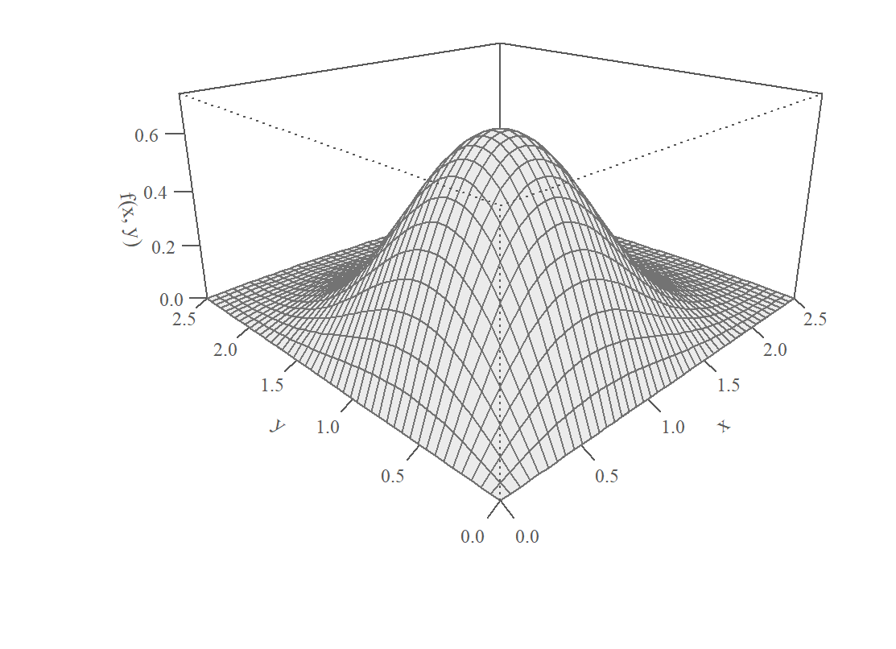
Şekil 11.1: Birleşik olasılık yoğunluk fonksiyonu: \(f(x,y)=4xye^{-(x^2+y^2)}\), \(x>0,~y>0\)
Birinci özelliğe (Denklem 11.20) göre yoğunluk fonksiyonunun değerleri negatif olamaz. İkinci özellik (Denklem 11.21) rassal değişken çiftinin tanım aralığında integralin bire eşit olduğunu belirtmektedir. Ortak olasılık yoğunluk fonksiyonu ile tanımlanan yüzeyin altında kalan hacmin bire eşit olması gerekir. Üçüncü özellik (Denklem 11.22) bu yüzey altında tanımlanan herhangi bir bölgenin olasılığının, bu düzlem parçasıyla fonksiyonun yüzeyi arasında kalan hacmine eşit olduğunu belirtmektedir. Şekil 11.1 örnek bir birleşik yoğunluk fonksiyonunu göstermektedir. Bu yüzeyin altında kalan hacim 1’e eşittir.
Örnek 11.13 (Birleşik olasılık yoğunluk fonksiyonu) Aşağıda verilen iki değişkenli fonksiyonu düşünelim: \[
f(x,y)=\left\{
\begin{array}{ll}
k(x+y), &0<x<1,~0<y<2 \hbox{~ise;} \\
0, & \hbox{değilse.}
\end{array}
\right.
\] Bu fonksiyonun bir birleşik olasılık yoğunluk fonksiyonu olmasını sağlayacak \(k\) sabit sayısını bulun. Daha sonra elde ettiğiniz birleşik yoğunluk fonksiyonunu kullanarak \[
P\left(0<X<\frac{1}{2},~1<Y<2\right)
\] olasılığını bulun.
Çözüm:
\(k\) sabitinin bulunması
Öncelikle \(f(x,y)>0\) koşulunun sağlanabilmesi için \(k>0\) olmalı. İkinci koşuldan hareketle bunun bir birleşik olasılık yoğunluk fonksiyonu olabilmesi için \[
\int_{-\infty}^{\infty}\int_{-\infty}^{\infty} f(x,y)dxdy=1
\] olması gerekir. Bu fonksiyonun tanımlı olduğu aralıklar \(0 < x < 1\) ve \(0 < y < 2\) olduğundan, integral sınırları bu aralıklar olacaktır:
\[
\int_{0}^{2}\int_{0}^{1} k(x+y)\, dx\, dy = 1
\]
Önce iç integral (\(x\) değişkenine göre) hesaplanır: \[
\int_{0}^{1} k(x+y)\, dx = k\left[\frac{x^2}{2} + xy\right]_{0}^{1} = k\left(\frac{1}{2} + y\right)
\]\(x\) değişkenine göre integral aldığımız için bulduğumuz fonksiyon sadece \(y\) değişkenine bağlıdır.
Bu ifadeyi dış integral (\(y\) değişkenine göre) ile devam ettirelim:
Bu durumda, birleşik olasılık yoğunluk fonksiyonumuz:
\[
f(x,y)=\left\{
\begin{array}{ll}
\frac{1}{3}(x+y), &0<x<1,~0<y<2~ \hbox{ise;} \\
0, & \hbox{değilse.}
\end{array}
\right.
\] olarak yazılabilir. Şekil 11.2 bu birleşik yoğunluk fonksiyonunun yüzey grafiğini göstermektedir.
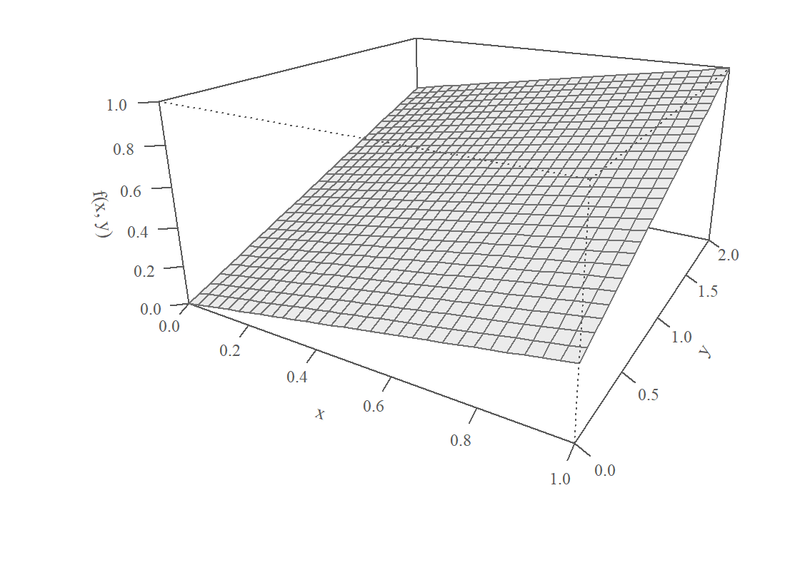
Şekil 11.2: İki değişkenli birleşik yoğunluk fonksiyonu
Aralık olasılığının bulunması
Belirtilen aralık için olasılık, birleşik olasılık yoğunluk fonksiyonunun \(X\) ve \(Y\) için verilen sınırlar arasında integraline eşittir:
\[
P\left(0<X<\frac{1}{2},~1<Y<2\right) = \int_{1}^{2}\int_{0}^{\frac{1}{2}} f(x,y)\, dx\, dy
\]
Bu ifadeyi dış integral (\(y\) değişkenine göre) ile devam ettirelim:
\[
\int_{1}^{2} \frac{1}{3} \left(\frac{1}{8} + \frac{y}{2}\right)\, dy = \frac{1}{3} \left[\frac{y}{8} + \frac{y^2}{4}\right]_{1}^{2}
\] Bu işlemin sonucu \[
\frac{1}{3} \left[\left(\frac{2}{8} + \frac{4}{4}\right) - \left(\frac{1}{8} + \frac{1}{4}\right)\right] = \frac{1}{3} \left[\frac{1}{4} + 1 - \frac{1}{8} - \frac{1}{4}\right]
\] istenen olasılık \[
P\left(0<X<\frac{1}{2},~1<Y<2\right)= \frac{1}{3} \times \frac{7}{8} = \frac{7}{24}
\] olarak bulunur.
11.2.2 Marjinal olasılık yoğunluk fonksiyonu
Tanım 11.12 (Marjinal olasılık yoğunluk fonksiyonu) İki değişkenli bir birleşik olasılık yoğunluk fonksiyonundan hareketle marjinal (tekil ya da yanal) olasılık yoğunluk fonksiyonları (myf) aşağıdaki gibi bulunur: \[
f_X(x)=\int_{-\infty}^{\infty} f(x,y)dy
\tag{11.23}\]\[
f_Y(y)=\int_{-\infty}^{\infty} f(x,y)dx
\tag{11.24}\]
Burada \(f_X(x)\)’i bulurken \(y\) değişkenine göre, \(f_Y(y)\)’yi bulurken \(x\) değişkenine göre integral aldığımıza dikkat ediniz. Marjinal yoğunluk fonksiyonu sadece ilgili sürekli rassal değişkene bağlıdır.
Örnek 11.14 (Marjinal olasılık yoğunluk fonksiyonu) Önceki örnekteki birleşik yoğunluk fonksiyonundan (bkz. Örnek 11.13) hareketle \(X\) ve \(Y\) rassal değişkenlerinin marjinal olasılık yoğunluk fonksiyonlarını bulalım.
Çözüm:\[
\begin{array}{lll}
f_X(x) &=& \int_0^2 \frac{1}{3} (x+y)dy \\
&=& \frac{1}{3} \left.\left(xy + \frac{y^2}{2}\right) \right|_0^2 \\
&=& \frac{2}{3}\left(x+1\right)
\end{array}
\] Buradan \(X\)’in marjinal yoğunluk fonksiyonu şöyle yazılır: \[
f_X(x)=\left\{
\begin{array}{ll}
\frac{2}{3}(x+1), & 0<x<1~\hbox{ise;} \\
0, & \hbox{değilse.}
\end{array}
\right.
\] Benzer şekilde \(Y\)’nin marjinal yoğunluğu için \(x\)’e göre integral alırız: \[
\begin{array}{lll}
f_Y(y) &=& \int_0^1 \frac{1}{3}(x+y)\, dx \\
&=& \frac{1}{3} \left.\left(\frac{x^2}{2}+xy\right) \right|_0^1 \\
&=& \frac{1}{3}\left( \frac{1}{2} + y \right)
\end{array}
\] Buradan \(Y\)’nin marjinal yoğunluk fonksiyonu \[
f_Y(y)=\left\{
\begin{array}{ll}
\frac{1}{3}(y+\frac{1}{2}), & 0<y<2~\hbox{ise;} \\
0, & \hbox{değilse.}
\end{array}
\right.
\] olur. Bu fonksiyonların gerçekten marjinal oyf olma özelliklerini taşıdıkları kolayca gösterilebilir.
11.2.3 Koşullu olasılık yoğunluk fonksiyonu
Tanım 11.13 (Koşullu olasılık yoğunluk fonksiyonu)\(f(x,y)\), \(f_X(x)\) ve \(f_Y(y)\), sırasıyla, \(X\)’in ve \(Y\)’nin birleşik yoğunluk ve marjinal yoğunluk fonksiyonları olsun. \(Y=y\) verilmişken \(X\)’in koşullu olasılık yoğunluk fonksiyonu \[
f(x \mid y)=\frac{f(x,y)}{f_Y(y)}
\tag{11.25}\] olarak tanımlıdır. Benzer şekilde \(X=x\) verilmişken \(Y\)’nin koşullu yoğunluk fonksiyonu \[
f(y \mid x)=\frac{f(x,y)}{f_X(x)}
\tag{11.26}\] olur.
Bu tanımlar olasılık bölümünde tanımladığımız koşullu olasılık kuralı ile uyumludur. \(A\) ve \(B\) herhangi iki olay olsun. \(A\) verilmişken \(B\)’nin koşullu olasılığı aşağıdaki gibi bulunabiliyordu: \[
\P(B \mid A)=\frac{\P(A\cap B)}{\P(A)}
\]
Örnek 11.15 (Koşullu olasılık yoğunluk fonksiyonu) Birleşik yoğunluk örneğindeki fonksiyondan (bkz. Örnek 11.13) hareketle koşullu yoğunluk fonksiyonlarını bulun. Buradan hareketle \[
\P\left(X>\frac{1}{2} \mid Y=1 \right)
\] ve \[
\P\left(1<Y<2 \mid X= \frac{1}{2} \right)
\]
olasılıklarını bulun.
Çözüm
Birleşik olasılık yoğunluk fonksiyonu \[
f(x,y)=\left\{
\begin{array}{ll}
\frac{1}{3}(x+y), &0<x<1,~0<y<2~ \hbox{ise;} \\
0, & \hbox{değilse.}
\end{array}
\right.
\] olarak verilmiştir. \(Y\)’nin marjinal yoğunluğunu \[
f_Y(y)=\left\{
\begin{array}{ll}
\frac{1}{3}(y+\frac{1}{2}), & 0<y<2~\hbox{ise;} \\
0, & \hbox{değilse.}
\end{array}
\right.
\] daha önce bulmuştuk.
\(f(x \mid y)\)’nin koşullu olasılık yoğunluk fonksiyonu olduğunu gösterebiliriz. Bunun için ilk olarak pozitiflik şartının sağlanması gerekir:
\(0 < x < 1\) ve \(0 < y < 2\) olduğunda, hem \(x + y > 0\) hem de \(1 + 2y > 0\) olduğundan \(f(x \mid y) \geq 0\).
\(x \not\in (0, 1)\) durumunda \(f(x \mid y) = 0\).
Öyleyse \(f(x \mid y) \geq 0\) her zaman sağlanır.
İkinci olarak \(0<y<2\) aralığındaki her hangi bir \(y\) için \[
\int_{0}^{1} f(x \mid y) \, dx = 1
\] olmalıdır: \[
\int_{0}^{1} f(x \mid y) \, dx = \int_{0}^{1} \frac{2(x + y)}{1 + 2y} \, dx \overset{?}=1
\]
Bu integrali hesaplayalım: \[
\frac{1}{1 + 2y} \int_{0}^{1} 2(x + y) \, dx = \frac{1}{1 + 2y} \left[ \int_{0}^{1} 2x \, dx + \int_{0}^{1} 2y \, dx \right].
\] Bu integrali hesaplarken \(y\) değişkenini verilen bir sabit olarak kabul ediyoruz. Köşeli parantez içindeki integralleri ayrı ayrı hesaplayalım: \[
\int_{0}^{1} 2x \, dx = \left[ x^2 \right]_{0}^{1} = 1^2 - 0^2 = 1
\]\[
\int_{0}^{1} 2y \, dx = 2y \int_{0}^{1} 1 \, dx = 2y [x]_{0}^{1} = 2y (1 - 0) = 2y
\]
Sonuç olarak \[
\int_{0}^{1} f(x \mid y) \, dx = \frac{1}{1 + 2y} \left[ 1 + 2y \right] = \frac{1 + 2y}{1 + 2y} = 1.
\] bulunur. \(f(x \mid y)\) koşullu yoğunluk fonksiyonu verilmiş bir \(y\) değeri için integral normalizasyon şartını da sağlamaktadır.
\(Y=1\) verilmişken koşullu yoğunluk açık olarak yazılabilir: \[
f(x \mid y=1)=\frac{f(x,y=1)}{f_Y(y=1)} = \frac{\frac{1}{3}(x+1) }{\frac{1}{3}(1+\frac{1}{2}) } = \frac{2}{3}(x+1)
\]
Benzer şekilde \(X=x\) verilmişken \(Y\)’nin koşullu yoğunluk fonksiyonu \[
f(y \mid x)=\frac{f(x,y)}{f_X(x)} = \frac{\frac{1}{3}(x+y) }{\frac{2}{3}(x+1) }
\] olur. \(X=1/2\) verilmişken koşullu yoğunluk \[
f(y \mid x=1/2)=\frac{f\left(x=\frac{1}{2}, y\right)}{f_X\left(x=\frac{1}{2}\right)} = \frac{\frac{1}{3}\left(\frac{1}{2}+y\right) }{\frac{2}{3}\left(\frac{1}{2}+1\right) } = \frac{1}{3}y + \frac{1}{6}
\] olur. Buradan istenen olasılık \[
\begin{array}{lll}
\P\left(1<Y<2 \mid X= \frac{1}{2} \right) &=& \int_{1}^2 f_{Y\mid X}\left( y \mid x=\frac{1}{2}\right)dy\\
&=& \int_{1}^2 \left( \frac{1}{3}y + \frac{1}{6} \right) \,dy \\
&=& \left.\left(\frac{1}{6}y^2 + \frac{1}{6}y \right) \right|_{1}^2 \\
&=& \frac{2}{3}
\end{array}
\] olarak bulunur.
11.2.4 Koşullu beklenen değer
Tanım 11.14 (Koşullu beklenen değer)\(f(x,y)\), \(f_X(x)\) ve \(f_Y(y)\), sırasıyla, \(X\)’in ve \(Y\)’nin birleşik yoğunluk ve marjinal yoğunluk fonksiyonları olsun. \(X=x\) verilmişken \(Y\)’nin koşullu beklenen değeri \[
\E[Y\mid X=x] = \int_{-\infty}^{\infty} y\,f(y \mid x)\,dy=\int_{-\infty}^{\infty} y\,\frac{f(x,y)}{f_X(x)} dy
\tag{11.27}\] olarak tanımlıdır. Koşullu beklenen değer \(x\)’e göre değişir, yani \(x\)’in bir fonksiyonudur. Bu fonksiyon doğrusal olabileceği gibi doğrusal olmayabilir de.
Benzer şekilde \(Y=y\) verilmişken \(X\)’in koşullu beklenen değerini de tanımlayabiliriz: \[
\E[X\mid Y=y] = \int_{-\infty}^{\infty} x\,f(x \mid y)\,dx=\int_{-\infty}^{\infty} x\,\frac{f(x,y)}{f_Y(y)} dx
\tag{11.28}\]
Örnek 11.16 (Koşullu beklenen değer) Koşullu yoğunluk örneğinde (bkz. Örnek 11.15) bulduğumuz koşullu yoğunluk fonksiyonlarından hareketle \(Y\)’nin ve \(X\)’in koşullu beklenen değerlerini bulalım.
Tanımdan hareketle \(Y\)’nin koşullu beklentisi \[
\E[Y\mid X=x] = \int_{-\infty}^{\infty} y\,f(y \mid x)\,dy=\int_{0}^{2} y\,\frac{(x+y) }{2(x+1) } dy
\] ya da \[
\E[Y\mid X=x] = \frac{1 }{2(x+1) } \int_{0}^{2} y\,(x+y)\, dy
\]
Bunu çözmek için \(0<x<1\) tanım aralığında değer girmemiz gerekir. Örneğin \(X=1/2\) değeri verilmişken koşullu beklentiyi hesaplarsak: \[
\E\left[ Y\mid X=\frac{1}{2} \right] = \int_{0}^{2} y\,\frac{(\frac{1}{2}+y) }{2(\frac{1}{2}+1) } dy = \int_{0}^{2} \frac{1}{6}(y+2y^2)dy
\] Buradan \[
\E\left[ Y\mid X=\frac{1}{2} \right] = \frac{11}{9}\approx 1.22
\] bulunur.
\(Y\)’nin koşullu beklentisini sadece \(X\)’in bir fonksiyonu olarak da ifade edebiliriz: \[
\E[Y\mid X=x] = \frac{1 }{2(x+1) } \int_{0}^{2} y\,(x+y)\, dy =\frac{1}{2(x + 1)} \left[ x \int_{0}^{2} y \, dy + \int_{0}^{2} y^2 \, dy \right]
\] Buradan \[
\E[Y\mid X=x] = \frac{1}{2(x + 1)} \left[ x \cdot \frac{y^2}{2} \bigg|_{0}^{2} + \frac{y^3}{3} \bigg|_{0}^{2} \right]= \frac{1}{2(x + 1)} \left[ x \cdot 2 + \frac{8}{3} \right]
\]\[
\E[Y\mid X=x] = \frac{2x}{2(x + 1)} + \frac{4}{3(x + 1)} = \frac{x}{x + 1} + \frac{4}{3(x + 1)}
\] Bu fonksiyon \(X=1/2\)’de değerlenirse \[
\E[Y\mid X = 0.5] = \frac{0.5}{0.5 + 1} + \frac{4}{3 \cdot (0.5 + 1)}=\frac{11}{9}
\] olduğu görülebilir.
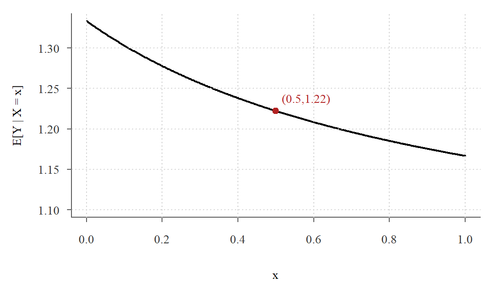
Şekil 11.3: Koşullu beklenen değer fonksiyonu
Şekil 11.3 bu koşullu beklenen değer fonksiyonunun grafiğini göstermektedir. Grafikte, \(\E[Y \mid X=x]\) koşullu beklentisi \(X\)’in bir fonksiyonu olarak gösterilmektedir. \(X=0.5\) noktasındaki değeri, \(\E[Y \mid X=0.5]=\frac{11}{9}\) olarak bir noktayla işaretlenmiştir.
Örnek 11.17 Bir kişinin yaşı (\(X\)) ile TL cinsinden yıllık sağlık masrafı (\(Y\)) arasındaki ilişki aşağıdaki doğrusal fonksiyon ile betimlenebilmektedir: \[
Y=500 + 20 X +\epsilon
\] burada \(\epsilon\) yaşa koşullu ortalaması 0 ve standart sapması 300 TL olan bir rassal değişkendir: \(\E(\epsilon\mid X)=0\), \(\sigma_\epsilon=300\). 25 yaşında bir kişinin beklenen sağlık harcamasını bulun. 40 yaşında bir kişi için beklenen masraf kaçtır? Beklenen sağlık harcaması ile gerçek masraf (\(Y\)) arasındaki farkın neden sıfır olmayabileceğini tartışınız.
Çözüm:
\(Y\)’nin \(X=x\)’e koşullu beklenen değerini bulalım: \[
\E[Y\mid X] = 500 + 20 X + \E(\epsilon\mid X) = 500 + 20 X
\] Buradan 25 yaşında birinin beklenen sağlık harcaması \[
\E[Y\mid X=25] = 500 + (20)\cdot (25) = 1000~ \text{TL}
\] ve 40 yaşında birinin beklenen sağlık harcaması \[
\E[Y\mid X=40] = 500 + (20)\cdot (40) = 1300~ \text{TL}
\] olarak bulunur.
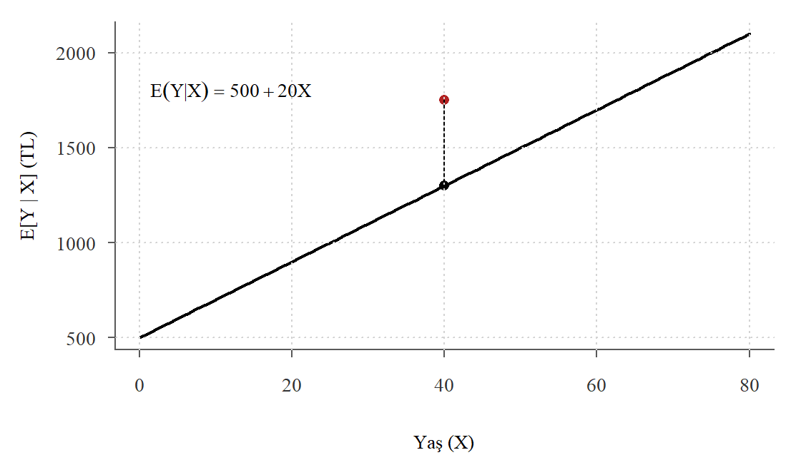
Şekil 11.4: Sağlık harcamasının yaşa koşullu beklenen değer fonksiyonu
Şekil 11.4 bireysel sağlık harcamalarının yaşa göre koşullu beklenen değerini göstermektedir. Yaşa göre beklenen harcamalar doğrusal bir biçimde artmaktadır. Bu doğru üzerindeki noktalar herhangi bir yaş için anakütledeki koşullu dağılımın ortalama değerleridir. Örneğin, rassal seçilmiş 40 yaşında birinin gerçek sağlık harcaması 1750 TL ise (grafikte kırmızı nokta) bu bireyin harcaması ilgili yaş grubundaki ortalamanın (1300 TL) üzerindedir. Bu fark \(\epsilon\) ile temsil edilmiştir.
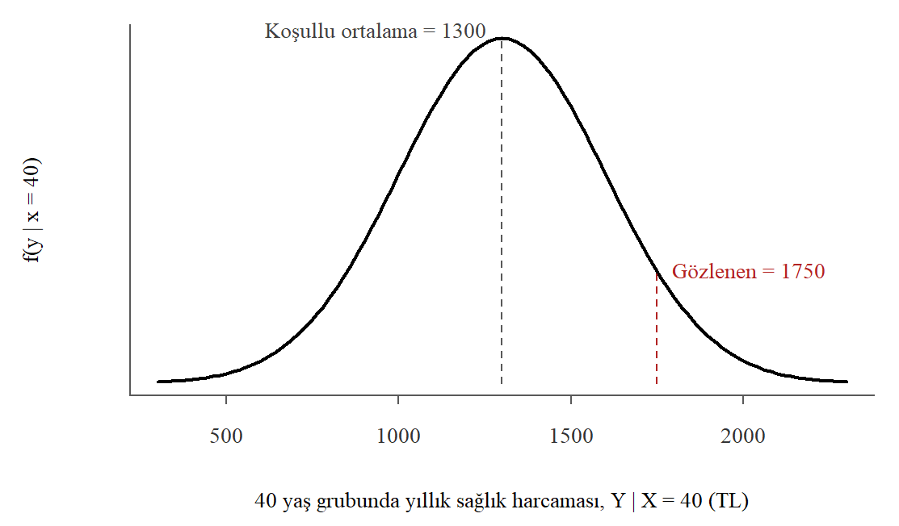
Şekil 11.5: 40 yaşındaki bireylerin yıllık sağlık harcamasının koşullu yoğunluğu (normal dağılım varsayımıyla)
Şekil 11.5 40 yaşındaki tüm bireylerin sağlık harcamalarının yoğunluk fonksiyonunu göstermektedir. Burada \(\epsilon\)’nin normal dağıldığını varsaydık. Bu koşullu yoğunluk fonksiyonunun ortalaması 1300 TL, standart sapması 300 TL’dir. 40 yaşında bir bireyin sağlık harcaması bu değerden düşük ya da yüksek olabilir. Örneğimizde eğer gerçek değer 1750 TL ise bu bireyin ortalamadan daha yüksek harcamaya sahip olduğu anlamına gelir. Normal dağılım varsayımı altında 40 yaşında bir bireyin harcamasının 1750 TL’yi aşma olasılığı \(1-\Phi\left((1750-1300)/300\right)=1-\Phi(1.5)\approx 0.067\) olur. Benzer şekilde 20 yaşındaki bireyler için de bir koşullu yoğunluk fonksiyonu çizilebilir.
11.2.5 Birikimli birleşik dağılım fonksiyonu
Tanım 11.15 (Birikimli birleşik dağılım fonksiyonu) İki değişkenli birikimli birleşik dağılım fonksiyonu \(X\) ve \(Y\)’nin verilmiş \(x\) ve \(y\) değerlerini aşmama olasılığını gösteren bir fonksiyondur: \[
F(x,y)=\P(X\leq x,~Y\leq y) =\int_{-\infty}^{y}\int_{-\infty}^{x} f(t,s)dtds
\]
İkiden fazla rassal değişkenin olduğu durumda \[
F(x_1,x_2,\ldots,x_k)=\int_{-\infty}^{x_k}\int_{-\infty}^{x_{k-1}}\ldots \int_{-\infty}^{x_1}
f(t_1,t_2,\ldots,t_k)dt_1dt_2,\ldots,dt_k
\] yazılabilir.
Örnek 11.18 Birleşik yoğunluk örneğindeki fonksiyondan (bkz. Örnek 11.13) hareketle birikimli birleşik dağılım fonksiyonunu bulalım.
Birleşik yoğunluk fonksiyonu aşağıdaki gibi verilmişti:
\[
f(x, y) = \frac{1}{3}(x + y), \quad 0 < x < 1, \, 0 < y < 2
\]
Birikimli birleşik dağılım fonksiyonu, \(F(x, y)\): \[
F(x, y) = \int_{0}^{y} \int_{0}^{x} \frac{1}{3}(u + v) \, du \, dv
\]
Önce \(u\)’ya göre integrali hesaplayalım: \[
\int_{0}^{x} \frac{1}{3}(u + v) \, du = \frac{1}{3} \left[\frac{u^2}{2} + vu \right]_{0}^{x} = \frac{1}{3} \left(\frac{x^2}{2} + vx \right)
\]
\[
F(x, y) = \frac{1}{6} \left(x^2y + xy^2 \right), \quad 0 < x \leq 1, \, 0 < y \leq 2
\] olarak bulunur. Sınır koşullarını dikkate alarak birleşik birikimli dağılım fonksiyonu aşağıdaki gibi yazılabilir: \[
F(x, y)=\left\{
\begin{array}{ll}
0, & x \leq 0~\hbox{ veya }~y \leq 0~\hbox{;}\\
\frac{1}{6} \left(x^2y + xy^2 \right), & 0<x< 1, \, 0<y<2~\hbox{;} \\
\frac{1}{6} y\left(1 + y \right), & x\geq 1, \, 0<y<2~\hbox{;} \\
\frac{1}{3} x\left(x + 2 \right), & 0<x< 1, \, y\geq2~\hbox{;} \\
1, & x\geq 1,~y\geq 2.
\end{array}
\right.
\]Şekil 11.6 bu birikimli birleşik dağılım fonksiyonunun yüzey grafiğini göstermektedir.
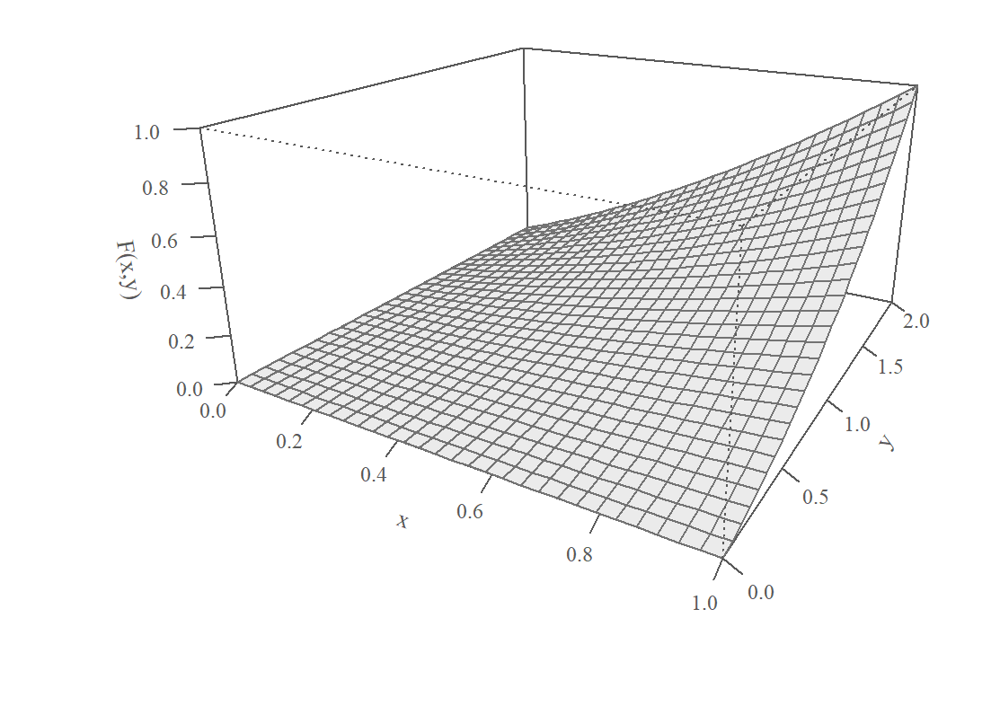
Şekil 11.6: İki değişkenli birikimli birleşik dağılım fonksiyonu
Bu fonksiyondan hareketle \(X\)’in 0.5 veya daha küçük ve \(Y\)’nin 1 veya daha küçük değerler alma olasılığını hesaplayabiliriz:
\[
F(x, y) = \frac{1}{6} \left(x^2y + xy^2 \right)
\] fonksiyonundan hareketle istenen olasılık: \[
\P(X\leq 0.5,~Y\leq 1)=F(0.5,~ 1)= \frac{1}{6} \left((0.5)^2\cdot 1 + 0.5\cdot 1 \right)=0.125
\] olarak bulunur. Şekil 11.7 bu olasılığı birleşik birikimli dağılım fonksiyonunun kontür grafiği üzerinde göstermektedir.
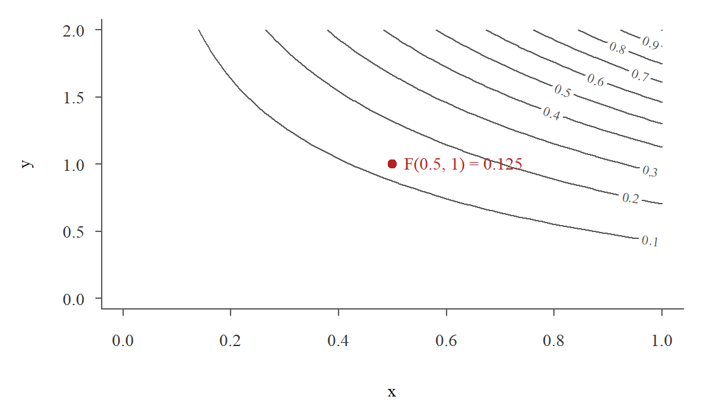
Şekil 11.7: Birikimli birleşik dağılım fonksiyonu kontür grafiği
Birleşik birikimli dağılım fonksiyonu ile birleşik yoğunluk fonksiyonu arasındaki ilişki aşağıdaki gibi yazılabilir: \[
\frac{\partial^2 F(x,y)}{\partial x\partial y} = f(x,y)
\] Yani birleşik birikimli dağılım fonksiyonunun önce \(x\)’e, sonra \(y\)’ye göre alınan karma ikinci kısmi türevi birleşik yoğunluk fonksiyonunu verir.
Önceki örnekte önce \(x\)’e göre kısmi türevi alalım: \[
\frac{\partial F(x,y)}{\partial x} = \frac{1}{6}(2xy+y^2)
\] Bunun da \(y\)’ye göre kısmi türevini alırsak: \[
\frac{\partial^2 F(x,y)}{\partial x\partial y} = \frac{1}{3}(x+y)\equiv f(x,y)
\] birleşik yoğunluk fonksiyonuna ulaşırız.
11.2.6 Bağımsızlık
Tanım 11.16 (İstatistiksel Bağımsızlık) Eğer birleşik olasılık yoğunluk fonksiyonu bütün \((x,y)\) değerleri için aşağıdaki gibi \[
f(x,y) =f_X(x)\cdot f_Y(y)
\tag{11.29}\] marjinal yoğunlukların çarpımı olarak yazılabiliyorsa \(X\) ve \(Y\) rassal değişkenleri istatistik bakımından bağımsızdır denir.
Bu tanım genelleştirilebilir. \(X_1,X_2,\ldots,X_n\) rassal değişkenlerinin birleşik olasılık yoğunluk fonksiyonu, marjinal yoğunluk fonksiyonlarının çarpımı olarak yazılabiliyorsa, yani \[
\begin{aligned}
f(x_1,x_2,\ldots,x_n) &= f_1(x_1)\cdot f_2(x_2)\cdots f_n(x_n) \\
&= \prod_{j=1}^n f_j(x_j)
\end{aligned}
\] ise bu rassal değişkenler birbirinden bağımsızdır denir.
Örnek 11.19 (Bağımsızlık) Birleşik yoğunluk örneğindeki (bkz. Örnek 11.13) birleşik ve marjinal yoğunluk fonksiyonlarından hareketle \(X\) ve \(Y\)’nin bağımsız olup olmadığını bulalım.
Bunun için \[
f_X(x)\cdot f_Y(y) \stackrel{?}{=} f(x,y)
\] olup olmadığını incelememiz gerekir. Marjinal yoğunluk fonksiyonlarını daha önce bulmuştuk. Bunları yerine koyarsak
\[
\begin{array}{lll}
f_X(x)\cdot f_Y(y) &=& \frac{2}{3}(x+1) \frac{1}{3}(y+\frac{1}{2})\\
&\neq& f(x,y)
\end{array}
\] çarpımlarının birleşik yoğunluk fonksiyonuna eşit olmadığını görüyoruz. Öyleyse \(X\) ve \(Y\) rassal değişkenleri bağımsız değildir diyebiliriz. Başka bir deyişle, \(X\) ve \(Y\) değişkenleri birbirlerine bağımlıdır. \(X\)’in aldığı değerler \(Y\) için bilgi içerir. Benzer şekilde \(Y\)’nin aldığı değerler de \(X\) için bilgi içerir.
Örnek 11.20 (Bağımsızlık) Birleşik yoğunluk fonksiyonu aşağıdaki gibi tanımlanmıştır: \[
f(x,y) = \left\{
\begin{array}{ll}
\frac{1}{9}, &1<x<4,~1<y<4~ \hbox{ise;} \\
0, & \hbox{değilse.}
\end{array}
\right.
\]\(X\) ve \(Y\)’nin istatistik bakımından bağımsız olup olmadıklarını gösteriniz.
Çözüm
Önce marjinal yoğunlukları bulalım: \[
f_X(x)=\int_1^4 \frac{1}{9}dy = \frac{1}{3}
\]\[
f_Y(y)=\int_1^4 \frac{1}{9}dx = \frac{1}{3}
\] Buradan \[
f(x,y)=\frac{1}{9}=f_X(x)\cdot f_Y(y)=\left(\frac{1}{3}\right)
\left(\frac{1}{3}\right)
\] koşulu bütün \((x,y)\) değerleri için sağlandığı için \(X\) ve \(Y\) rassal değişkenleri bağımsızdır.
Bu örnekte yoğunluğun sıfırdan farklı olduğu bölge bir dikdörtgendir: \(X\)’in alabileceği değerler \(Y\)’nin aldığı değere bağlı değildir. Tanım bölgesi dikdörtgen değilse, örneğin \(0<y<x<1\) gibi bir üçgense, değişkenler bağımsız olamaz. Çünkü \(X\)’in aldığı değer \(Y\)’nin alabileceği değerleri sınırlar (bkz. Alıştırma 11.7).
Tanım 11.17 (Bağımsız rassal değişkenlerin birleşik birikimli dağılımları)\(X\) ve \(Y\) rassal değişkenleri birbirinden bağımsızsa bunların birleşik birikimli dağılım fonksiyonu marjinal birikimli dağılımların çarpımına eşittir: \[
F(x,y) = F(x)F(y)
\]
Örnek 11.21\(X\) ve \(Y\) birbirinden bağımsız ve 0 ile 1 arasında tekdüze dağılıma uyan rassal değişkenler olsun: \[
X\sim~Uniform(0,1),\quad Y\sim~Uniform(0,1), ~~\text{bağımsız}
\] Bu rassal değişkenlerin birleşik birikimli dağılımını bulun.
Çözüm:
Bu rassal değişkenlerin marjinal birikimli dağılım fonksiyonları: \[
F(x) = \left\{
\begin{array}{ll}
0, & x<0 \\
x, & 0\leq x\leq 1~ \hbox{;} \\
1, & x> 1 \hbox{.}
\end{array}
\right.
\]\[
F(y) = \left\{
\begin{array}{ll}
0, & y<0 \\
y, & 0\leq y\leq 1~ \hbox{;} \\
1, & y> 1 \hbox{.}
\end{array}
\right.
\] Bu iki rassal değişken bağımsız olduğuna göre \[
F(x,y) = F(x)F(y)=xy,\quad 0\leq x\leq 1,~0\leq y\leq 1
\] olur. Sınır koşullarını da dikkate alarak: \[
F(x, y)=\left\{
\begin{array}{ll}
0, & x < 0~\hbox{ veya }~y < 0~\hbox{;}\\
xy, & 0\leq x\leq 1, \, 0\leq y\leq 1~\hbox{;} \\
y, & x>1, \, 0\leq y\leq 1~\hbox{;} \\
x, & y>1, \, 0\leq x\leq 1~\hbox{;} \\
1, & x> 1,~y>1.
\end{array}
\right.
\] buluruz.
11.2.7 Kovaryans
Sürekli rassal değişkenler için de kovaryans iki değişken arasındaki doğrusal ilişkinin yönünü gösterir. Büyüklüğü ölçü birimlerine bağlı olduğu için ilişkinin gücünü göstermez; bunun için korelasyon katsayısı kullanılır. Kovaryansın işareti, bu iki değişken arasındaki ilişkinin pozitif mi yoksa negatif mi olduğunu belirler. Pozitif bir kovaryans, bir değişkenin artışıyla diğerinin de artma eğiliminde olduğunu gösterirken; negatif bir kovaryans, bir değişkenin artışıyla diğerinin azalma eğiliminde olduğunu gösterir. Kovaryansın sıfır olması iki değişken arasında doğrusal bir ilişki olmadığını ifade eder.
Tanım 11.18 (Kovaryans)\(X\) ve \(Y\) sürekli rassal değişkenleri arasındaki kovaryans aşağıdaki gibi tanımlanır: \[
\text{Cov}(X, Y) = \int_{-\infty}^{\infty} \int_{-\infty}^{\infty} (x - \mu_X)(y - \mu_Y) f(x, y) \, dx \, dy
\tag{11.30}\] Burada \(f(x,y)\) birleşik olasılık yoğunluk fonksiyonunu, \(\E(X)\equiv \mu_X\) ve \(\E(Y)\equiv \mu_Y\) bu rassal değişkenlerin beklentilerini göstermektedir.
Kesikli rassal değişkenlerde olduğu gibi kovaryansın kısa yol formülü \[
\Cov\left(X,Y\right) = \E(XY)-\E(X)\E(Y)= \E(XY)-\mu_x \mu_y
\tag{11.31}\] olarak tanımlıdır. Burada \(\E(XY)\)\[
\E(XY)=\int_{-\infty}^{\infty} \int_{-\infty}^{\infty} xy f(x, y) \, dx \, dy
\] ile bulunur.
Örnek 11.22 Birleşik yoğunluk örneğindeki (bkz. Örnek 11.13) fonksiyonu kullanarak \[
f(x,y)=\left\{
\begin{array}{ll}
\frac{1}{3}(x+y), &0<x<1,~0<y<2~ \hbox{ise;} \\
0, & \hbox{değilse.}
\end{array}
\right.
\]\(X\) ile \(Y\) arasındaki kovaryansı bulunuz.
Çözüm
Daha önce bulduğumuz marjinal yoğunluk fonksiyonlarını (bkz. Örnek 11.14) kullanarak beklenen değerleri hesaplayalım:
Kısa yol formülünden hareketle kovaryans: \[
\text{Cov}(X,Y) = \E(XY) - \E(X)\E(Y) = \frac{2}{3} - \frac{5}{9} \cdot \frac{11}{9} = \frac{2}{3} - \frac{55}{81} =- \frac{1}{81}\approx -0.012
\] olarak bulunur.
\(X\) ve \(Y\) bağımsız iki rassal değişken ise kovaryansları 0 olur: \[
\text{Cov}(X,Y) = \E(XY) - \E(X)\E(Y)=0
\] Buradan \(\E(XY)= \E(X)\E(Y)\) yazılabilir.
Örnek 11.23 Bağımsızlık örneğinde (bkz. Örnek 11.20) incelediğimiz birleşik yoğunluk fonksiyonunu düşünelim: \[
f(x,y) = \left\{
\begin{array}{ll}
\frac{1}{9}, &1<x<4,~1<y<4~ \hbox{ise;} \\
0, & \hbox{değilse.}
\end{array}
\right.
\]\(X\) ve \(Y\)’nin bağımsız olduğunu göstermiştik. Marjinal yoğunlukları aşağıdaki gibi bulmuştuk: \[
f_X(x)=\int_1^4 \frac{1}{9}dy = \frac{1}{3}
\]\[
f_Y(y)=\int_1^4 \frac{1}{9}dx = \frac{1}{3}
\]
\(X\) ve \(Y\) arasındaki kovaryansın sıfır olduğunu gösteriniz.
Çözüm:
Bu iki rassal değişkenin birbirinden bağımsız olduğunu göstermiştik. Buradan hareketle kovaryansın 0 olacağını biliyoruz. Ancak nümerik olarak da çözümü gösterelim.
\(X\) ve \(Y\), sırasıyla, ortalamaları \(\mu_x\) ve \(\mu_y\), varyansları \(\sigma^2_x\) ve \(\sigma^2_y\) olan iki rassal değişken olsun. Buna göre aşağıdaki kuralları kolayca ispatlayabiliriz:
İki rassal değişkenin toplamının beklentisi ve varyansı.
\(a\) ve \(b\) sabit sayılar olmak üzere \[
\E(aX - bY) = a\E(X) - b\E(Y)=a\mu_x -b\mu_y
\] ve \[
\Var(aX-bY) = a^2 \Var(X)+b^2\Var(Y) - 2ab~ \Cov(X,Y) = a^2\sigma^2_x +b^2\sigma^2_y - 2ab~ \Cov(X,Y)
\] İspat: Alıştırma (bkz. Problem 11.7).
\(k\) rassal değişkenin toplamının beklentisi ve varyansı.
\(X_1,X_2,\ldots,X_k\), ortalamaları \(\mu_1,\mu_2,\ldots,\mu_k\) ve varyansları \(\sigma_1^2,\sigma_2^2,\ldots,\sigma_k^2\) olan \(k\) tane rassal değişken olsun. Bunların toplamlarının beklentisi ve varyansı aşağıdaki gibi yazılabilir. \[
\begin{aligned}
\E(X_1+X_2+\ldots +X_k) &= \E(X_1)+\E(X_2)+\ldots+\E(X_k) \\
& = \mu_1+\mu_2+\ldots+\mu_k
\end{aligned}
\]
\[
\begin{aligned}
\Var(X_1+X_2+\ldots +X_k) &= \sigma_1^2+\sigma_2^2+\ldots+\sigma_k^2+2\Cov(X_1,X_2)+2\Cov(X_1,X_3)+\ldots\\
& = \sum_{i=1}^k \sigma_i^2 + 2\sum_{i=1}^{k-1}\sum_{j=i+1}^k\Cov(X_i,X_j)
\end{aligned}
\]\(X_1,X_2,\ldots,X_k\) rassal değişkenleri birbirinden bağımsızsa\[
\Var(X_1+X_2+\ldots +X_k) = \sigma_1^2+\sigma_2^2+\ldots+\sigma_k^2
\] yazılabilir. Bu durumda ikili kovaryans terimlerinin tamamı 0 olacaktır. Tüm ikili kovaryans terimleri 0 ise, yani, bu rassal değişkenler birbirleriyle ilişkisizse de aynı sonuca ulaşılır.
Bu sonucun önemli bir uygulaması örneklem ortalamasıdır. \(X_1,X_2,\ldots,X_n\) bağımsız ve her birinin ortalaması \(\mu\), varyansı \(\sigma^2\) olsun. Örneklem ortalaması \(\bar X=(X_1+\ldots+X_n)/n\), ağırlıkları \(1/n\) olan bir toplamdır. Yukarıdaki kurallardan \[
\E(\bar X)=\frac{1}{n}\cdot n\mu=\mu,\qquad \Var(\bar X)=\frac{1}{n^2}\cdot n\sigma^2=\frac{\sigma^2}{n}
\] bulunur. Gözlem sayısı arttıkça örneklem ortalamasının varyansı küçülür. Bu sonuç Kısım II’deki örnekleme dağılımlarının temelidir.
11.4 İki Değişkenli ve Çok Değişkenli Normal Dağılım
Normal dağılımın tek bir rassal değişken için ne kadar kullanışlı olduğunu gördük (bkz. Bölüm 10). Birden fazla rassal değişkenle çalışırken de en sık kullanılan birleşik dağılım normal dağılımın çok değişkenli biçimidir. Bu kısımda önce iki değişkenli normal dağılımı, sonra çok değişkenli normal dağılımı tanıtacağız. Bu konular ileri derslerde ayrıntılı olarak ele alınır. Burada amacımız temel fikirleri ve bu bölümde öğrendiğimiz kavramlarla bağlantılarını görmektir.
11.4.1 İki değişkenli normal dağılım
Tanım 11.19 (İki değişkenli normal dağılım)\((X,Y)\) çiftinin birleşik yoğunluk fonksiyonu \[
\begin{aligned}
f(x,y)&=\frac{1}{2\pi\sigma_X\sigma_Y\sqrt{1-\rho^2}}\exp\left\{-\frac{1}{2(1-\rho^2)}\left[z_x^2-2\rho\, z_x z_y+z_y^2\right]\right\},\\
&\qquad -\infty<x<\infty,~-\infty<y<\infty
\end{aligned}
\tag{11.32}\] ise \((X,Y)\) iki değişkenli normal dağılıma uyar. Burada \(z_x=(x-\mu_X)/\sigma_X\) ve \(z_y=(y-\mu_Y)/\sigma_Y\) standartlaştırılmış değerlerdir. Dağılımın beş parametresi vardır: ortalamalar \(\mu_X\) ve \(\mu_Y\), standart sapmalar \(\sigma_X>0\) ve \(\sigma_Y>0\), korelasyon katsayısı \(-1<\rho<1\). Kısaca \[
(X,Y)\sim N_2\left(\mu_X,~\mu_Y,~\sigma_X^2,~\sigma_Y^2,~\rho\right)
\] yazarız.
Şekil 11.8 üç farklı korelasyon katsayısı için standart iki değişkenli normal dağılımın (\(\mu_X=\mu_Y=0\), \(\sigma_X=\sigma_Y=1\)) kontur çizgilerini ve bu dağılımdan üretilmiş 400 noktayı gösteriyor. Kontur çizgileri yoğunluğun aynı değeri aldığı noktaları birleştirir. Bu çizgiler elips biçimindedir. \(\rho=0\) olduğunda elipsler daireye dönüşür. \(\rho>0\) olduğunda sağa yukarı, \(\rho<0\) olduğunda sağa aşağı doğru uzanırlar.
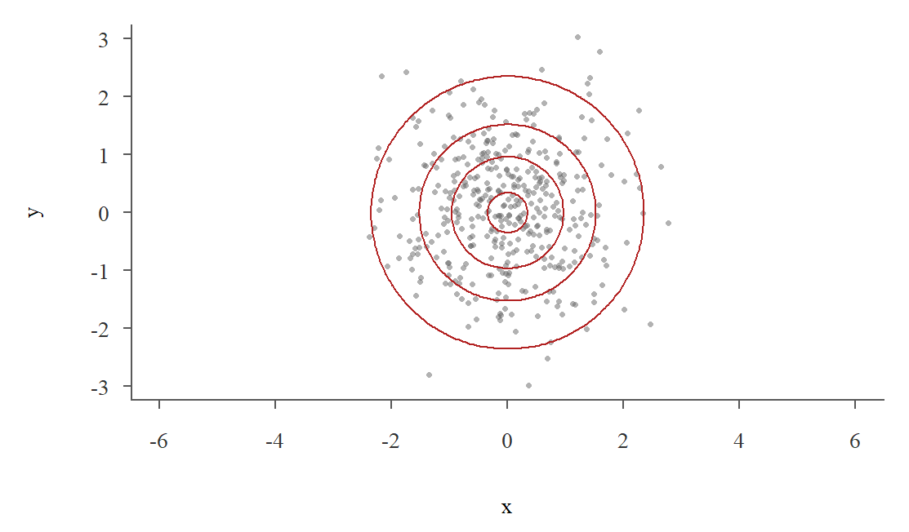
(a) \(\rho = 0\)
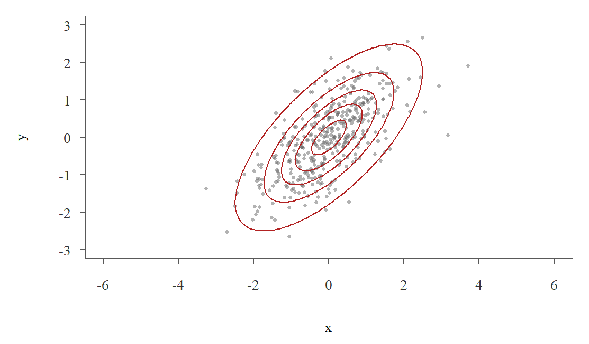
(b) \(\rho = 0.7\)
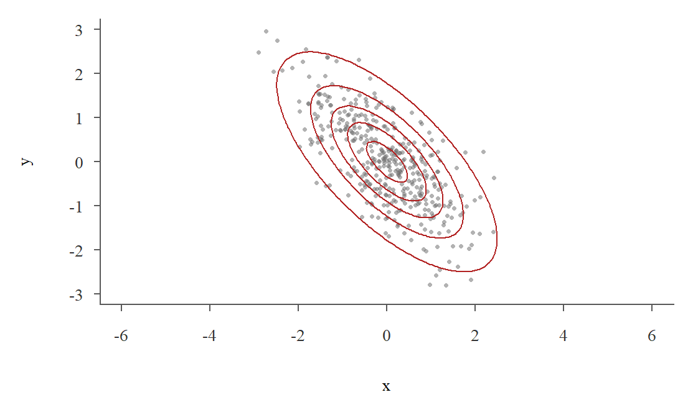
(c) \(\rho = -0.7\)
Şekil 11.8: Standart iki değişkenli normal dağılımın kontur çizgileri ve bu dağılımdan üretilmiş 400 nokta
İki değişkenli normal rassal değişkenler üretmek.\(Z_1\) ve \(Z_2\) birbirinden bağımsız iki standart normal rassal değişken olsun. Bunlardan \[
X=\mu_X+\sigma_X Z_1,\qquad Y=\mu_Y+\sigma_Y\left(\rho Z_1+\sqrt{1-\rho^2}\,Z_2\right)
\tag{11.33}\] tanımlayalım. Bu çiftin birleşik yoğunluk fonksiyonunun iki değişkenli normal yoğunluk (bkz. Denklem 11.32) olduğu gösterilebilir. Parametrelerin rolünü bu bölümdeki kurallarla kolayca görebiliriz. \(Z_1\) ve \(Z_2\) bağımsız olduğu için \[
\Var\left(\rho Z_1+\sqrt{1-\rho^2}\,Z_2\right)=\rho^2\cdot 1+(1-\rho^2)\cdot 1=1
\] olur ve buradan \(\Var(Y)=\sigma_Y^2\) bulunur. Ayrıca \(X\) ile \(Y\) arasındaki ortak rassal kısım yalnızca \(Z_1\)’dir. Bu yüzden \(\Cov(X,Y)=\sigma_X\sigma_Y\rho\Var(Z_1)=\rho\,\sigma_X\sigma_Y\) ve korelasyon katsayısı \(\rho\) olur. Bu yolla R’da iki değişkenli normal rassal sayılar üretebiliriz:
ort_x ort_y ss_x ss_y kor
10.002096 5.006513 2.006722 3.003047 0.701303
Özellikler.\((X,Y)\sim N_2(\mu_X,\mu_Y,\sigma_X^2,\sigma_Y^2,\rho)\) olsun.
Marjinal dağılımlar normaldir:\(X\sim N(\mu_X,~\sigma_X^2)\) ve \(Y\sim N(\mu_Y,~\sigma_Y^2)\).
Koşullu dağılımlar normaldir.\(X=x\) bilindiğinde tanımdaki (bkz. Denklem 11.33) \(Z_1\) değeri \(z_x=(x-\mu_X)/\sigma_X\) olarak belirlenmiş olur. Geriye kalan tek rassal kısım \(Z_2\)’dir. Buradan \[
Y\mid X=x~\sim~N\left(\mu_Y+\rho\,\frac{\sigma_Y}{\sigma_X}\,(x-\mu_X),~~\sigma_Y^2\,(1-\rho^2)\right)
\tag{11.34}\] bulunur. Bu sonucun üç önemli yorumu vardır. Birincisi, koşullu beklenen değer \(x\)’in doğrusal bir fonksiyonudur. Doğrunun eğimi \(\rho\,\sigma_Y/\sigma_X=\Cov(X,Y)/\Var(X)\) olur. Kısım II’deki regresyon bölümünde örneklemden tahmin edeceğimiz doğru bu anakütle doğrusunun karşılığıdır. İkincisi, koşullu varyans \(x\)’e bağlı değildir. \(X\)’in değerini bilmek \(Y\)’nin varyansını \((1-\rho^2)\) oranında küçültür. Üçüncüsü, standartlaştırılmış değerlerle yazarsak \(\E(Z_y\mid Z_x=z_x)=\rho\, z_x\) olur. \(|\rho|<1\) olduğu için beklenen \(z_y\) değeri \(z_x\)’ten sıfıra daha yakındır. Bu olguya ortalamaya dönüş denir.
Korelasyonun sıfır olması bağımsızlık demektir. Yoğunluk fonksiyonunda (bkz. Denklem 11.32) \(\rho=0\) yazılırsa üstel ifade iki çarpana ayrılır ve \(f(x,y)=f_X(x)f_Y(y)\) elde edilir. Genel olarak kovaryansın sıfır olması bağımsızlık anlamına gelmez (bkz. Tanım 11.9). İki değişkenli normal dağılım bu kuralın önemli bir istisnasıdır. Burada önemli olan, çiftin birlikte iki değişkenli normal dağılmasıdır. İki değişkenin ayrı ayrı normal dağılması yetmez. Örneğin \(X\sim N(0,1)\) olsun ve \(X\)’ten bağımsız bir \(S\) değişkeni yarı yarıya \(+1\) ya da \(-1\) değerini alsın. \(Y=SX\) de standart normal dağılır ve \(\Cov(X,Y)=\E(SX^2)=\E(S)\E(X^2)=0\) olur. Ama \(|Y|=|X|\) olduğu için bu iki değişken açıkça bağımlıdır.
Doğrusal birleşimler normaldir.\(a\) ve \(b\) sabitler olmak üzere \[
aX+bY\sim N\left(a\mu_X+b\mu_Y,~~a^2\sigma_X^2+b^2\sigma_Y^2+2ab\,\rho\,\sigma_X\sigma_Y\right)
\] olur. Beklenen değer ve varyans, rassal değişkenlerin toplamları için gördüğümüz kurallardan gelir. Normal dağılım özelliği ise iki değişkenli normal dağılıma özgüdür.
Son özelliğin sık kullanılan bir özel hâli vardır. \(X\sim N(\mu_X,~\sigma_X^2)\) ve \(Y\sim N(\mu_Y,~\sigma_Y^2)\) birbirinden bağımsız iki normal rassal değişken olsun. Bağımsızlık \(f(x,y)=f_X(x)f_Y(y)\) demektir ve iki değişkenli normal yoğunlukta \(\rho=0\) yazıldığında elde edilen fonksiyon tam olarak budur (bkz. Denklem 11.32). Öyleyse bağımsız iki normal değişken birlikte de iki değişkenli normal dağılır ve doğrusal birleşimleri normaldir: \[
X+Y\sim N\left(\mu_X+\mu_Y,~~\sigma_X^2+\sigma_Y^2\right)
\tag{11.35}\] Daha genel olarak, bağımsız \(X_1,X_2,\ldots,X_n\) değişkenlerinin her biri normal dağılıyorsa toplamları da normal dağılır. Bu sonuç Kısım II’de anakütle normalken örneklem ortalamasının dağılımını bulurken doğrudan kullanılacaktır. Normal dağılım bu özelliğiyle ayrıcalıklıdır. Örneğin bağımsız iki tekdüze rassal değişkenin toplamı tekdüze dağılmaz.
Örnek 11.24 (Hane geliri ve harcaması) Normal Dağılım bölümünde hane gelirinin sağa çarpık olduğunu görmüştük (bkz. Örnek 10.7). Gelir ve harcamanın logaritmaları ise ayrı ayrı normal dağılıma oldukça yakındır. Hane anakütlesinde \(X\) log gelir, \(Y\) log harcama olsun. İki değişkenli normal dağılımın parametrelerini anakütleden hesaplayalım. Anakütle çok büyük olduğu için standart sapmada \(N\) ya da \(N-1\) ile bölmek arasındaki fark önemsizdir.
Şekil 11.9 anakütleden seçilmiş 3000 haneyi, bu parametrelerle çizilen iki değişkenli normal dağılımın kontur çizgilerini ve koşullu beklenen değer doğrusunu (bkz. Denklem 11.34) gösteriyor. Siyah noktalar hanelerin gelirlerine göre on eşit gruba ayrılmasıyla elde edilen grup ortalamalarıdır. Bu ortalamalar doğrunun üzerine neredeyse tam olarak oturmaktadır.
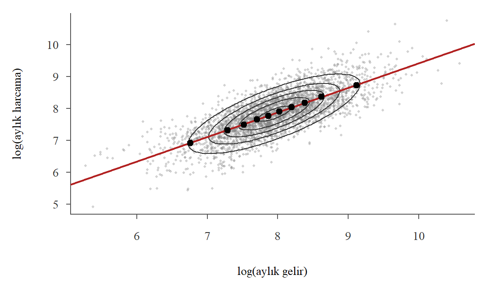
Şekil 11.9: Hane anakütlesinde log gelir ve log harcama: iki değişkenli normal dağılımın kontur çizgileri, koşullu beklenen değer doğrusu (kırmızı) ve gelir ondalıklarındaki ortalamalar (siyah)
Koşullu beklenen değer doğrusunun eğimi 0.77 olarak bulunur. Logaritmik değişkenler arasındaki bu eğim, gelir yüzde 1 arttığında harcamanın ortalama olarak yaklaşık yüzde 0.77 arttığını söyler. İktisatta bu büyüklük harcamanın gelir esnekliği olarak bilinir.
Aylık geliri 5000 TL olan hanelerin harcamasını düşünelim. Koşullu dağılım formülü (bkz. Denklem 11.34) kullanılarak log harcamanın koşullu dağılımı hesaplanabilir:
# geliri 5000 TL olan bir hanenin harcamasının 5000 TL'yi aşma olasılığı1-pnorm(log(5000), mean = kosullu_ort, sd = kosullu_ss)
[1] 0.2930598
Modele göre geliri 5000 TL olan bir hanenin gelirinden fazla harcama yapma olasılığı 0.293 olarak bulunur. Anakütlede geliri 4500 ile 5500 TL arasında olan 1647 hane içinde harcaması 5000 TL’yi aşanların oranı ise 0.288 olarak hesaplanır. Log harcamanın koşullu standart sapması (0.449) marjinal standart sapmadan (0.682) belirgin biçimde küçüktür. Geliri bilmek harcama hakkındaki belirsizliği azaltır.
Son olarak rassal seçilen bir hanenin gelirinden fazla harcama yapma olasılığını, yani \(\P(Y>X)=\P(Y-X>0)\) olasılığını bulalım. Doğrusal birleşim özelliğinden \(Y-X\) normal dağılır. Ortalaması \(\mu_Y-\mu_X\), varyansı \(\sigma_X^2+\sigma_Y^2-2\rho\,\sigma_X\sigma_Y\) olur:
ort_fark <- mu_y - mu_xss_fark <-sqrt(sigma_x^2+ sigma_y^2-2* rho * sigma_x * sigma_y)1-pnorm(0, mean = ort_fark, sd = ss_fark) # iki değişkenli normal model
[1] 0.4064048
mean(y > x) # anakütledeki oran
[1] 0.40515
Model 0.406 olasılığını verirken anakütledeki oran 0.405 olarak bulunur.
Bu uyum tesadüf değildir. Kitaptaki hane anakütlesi simülasyonla üretilmiştir. Bunun için önce çok değişkenli normal dağılımdan birbiriyle ilişkili gizli değişkenler üretilmiş, sonra her biri gerçek verilere benzeyen kendi dağılımına dönüştürülmüştür. Bu yönteme Gauss kopulası denir. Gerçek hane verilerinde de gelir ve harcamanın logaritmaları çoğu zaman yaklaşık normal dağılır, ama uyum bu kadar iyi olmayabilir. Özellikle en yüksek gelirlerde normal dağılımdan sapmalar görülür.
11.4.2 Çok değişkenli normal dağılım
\(k\) tane rassal değişkeni bir sütun vektörü olarak yazalım: \(\mathbf{X}=(X_1,X_2,\ldots,X_k)'\). Bu değişkenlerin ortalamalarını ortalama vektörü\(\boldsymbol\mu=(\mu_1,\mu_2,\ldots,\mu_k)'\) ile, varyans ve kovaryanslarını da kovaryans matrisi ile özetleriz. \(k=3\) için kovaryans matrisi \[
\boldsymbol\Sigma=\begin{bmatrix}
\sigma_{11} & \sigma_{12} & \sigma_{13}\\
\sigma_{21} & \sigma_{22} & \sigma_{23}\\
\sigma_{31} & \sigma_{32} & \sigma_{33}
\end{bmatrix}
\] biçimindedir. Burada köşegendeki \(\sigma_{ii}=\Var(X_i)\) terimleri varyansları, köşegen dışındaki \(\sigma_{ij}=\Cov(X_i,X_j)\) terimleri kovaryansları gösterir. \(\Cov(X_i,X_j)=\Cov(X_j,X_i)\) olduğu için kovaryans matrisi simetriktir.
Tanım 11.20 (Çok değişkenli normal dağılım)\(\mathbf{X}\) vektörünün birleşik yoğunluk fonksiyonu \[
f(\mathbf{x})=\frac{1}{(2\pi)^{k/2}\,|\boldsymbol\Sigma|^{1/2}}\exp\left\{-\frac{1}{2}(\mathbf{x}-\boldsymbol\mu)'\,\boldsymbol\Sigma^{-1}(\mathbf{x}-\boldsymbol\mu)\right\}
\tag{11.36}\] ise \(\mathbf{X}\) çok değişkenli normal dağılıma uyar ve \(\mathbf{X}\sim N_k(\boldsymbol\mu,~\boldsymbol\Sigma)\) yazılır. Burada \(|\boldsymbol\Sigma|\) kovaryans matrisinin determinantını, \(\boldsymbol\Sigma^{-1}\) ise tersini gösterir.
Bu formülün yapısı tek değişkenli normal yoğunlukla aynıdır (bkz. Denklem 10.1). \(k=1\) için \(\boldsymbol\Sigma=\sigma^2\) olur ve tek değişkenli normal yoğunluk elde edilir. \(k=2\) için kovaryans matrisinin köşegeninde \(\sigma_X^2\) ve \(\sigma_Y^2\), köşegen dışında \(\rho\,\sigma_X\sigma_Y\) yazılırsa Denklem 11.32 elde edilir. Formülü kullanmak matris cebri gerektirir. Bu kitapta formülün kendisiyle değil, aşağıdaki özellikleriyle çalışacağız.
Her \(X_i\) normal dağılır. Değişkenlerin herhangi bir alt kümesi de çok değişkenli normal dağılır.
Her doğrusal birleşim normal dağılır. \(\mathbf{w}=(w_1,\ldots,w_k)'\) sabit ağırlıklar olmak üzere \[
W=w_1X_1+\ldots+w_kX_k=\mathbf{w}'\mathbf{X}~\sim~N\left(\mathbf{w}'\boldsymbol\mu,~~\mathbf{w}'\boldsymbol\Sigma\,\mathbf{w}\right)
\] olur. Buradaki \(\mathbf{w}'\boldsymbol\Sigma\,\mathbf{w}=\sum_{i=1}^k\sum_{j=1}^k w_iw_j\,\sigma_{ij}\) ifadesi, rassal değişkenlerin ağırlıklı toplamının varyans formülünün matris gösterimidir.
Kovaryans matrisi köşegen ise, yani bütün kovaryanslar sıfırsa, değişkenler birbirinden bağımsızdır.
Koşullu dağılımlar da normaldir ve koşullu beklenen değerler koşul değişkenlerinin doğrusal fonksiyonlarıdır.
Örnek 11.25 (Üç varlıklı portföy) Bir yatırımcı birikiminin %40’ını A hisse senedi fonuna, %30’unu B hisse senedi fonuna, %30’unu da altına yatırmaktadır. Aylık getirilerin (%) ortalama vektörü, standart sapmaları ve korelasyonları aşağıdaki gibi olsun. Getirilerin çok değişkenli normal dağıldığını varsayalım.
A fonu
B fonu
Altın
Ortalama getiri
1.5
1.2
0.8
Standart sapma
6
5
3
Korelasyon: A fonu ile
1
0.6
\(-0.1\)
Korelasyon: B fonu ile
0.6
1
0
Korelasyon: Altın ile
\(-0.1\)
0
1
Portföy getirisi \(W=0.4X_A+0.3X_B+0.3X_{\text{altın}}\) bir doğrusal birleşimdir. Kovaryans matrisini standart sapmalar ve korelasyonlardan kurup \(\mathbf{w}'\boldsymbol\mu\) ve \(\mathbf{w}'\boldsymbol\Sigma\,\mathbf{w}\) değerlerini R’da matris çarpımıyla (%*%) hesaplayalım.
pnorm(0, mean = ort_p, sd = ss_p) # bir ayda zarar etme olasılığı
[1] 0.3682009
Portföyün beklenen aylık getirisi yüzde 1.20, standart sapması 3.56 puandır. Standart sapmaların ağırlıklı ortalaması 4.80 olduğu hâlde portföyün standart sapması bundan belirgin biçimde küçüktür. Bunun nedeni varlıkların birbiriyle tam korelasyonlu olmamasıdır. Altının hisse fonlarıyla korelasyonu sıfıra yakın ya da negatif olduğu için portföyün riskini azaltır. Bu olguya çeşitlendirme denir. Normal dağılım varsayımı altında portföyün bir ayda zarar etme olasılığı 0.368 olarak bulunur. Normal Dağılım bölümünde finansal getirilerin kuyruklarının normal dağılımdan kalın olduğunu gördüğümüzü de hatırlayalım (bkz. Alıştırma 10.7). Bu yüzden büyük kayıpların olasılığı bu modelle hesaplandığında olduğundan küçük çıkabilir.
11.5 Çözümlü Alıştırmalar
Alıştırma 11.1 Aşağıdaki fonksiyonu düşünelim: \[
f(x, y) =
\begin{cases}
cx & \text{eğer } 0 \leq x \leq 1 \text{ ve } 0 \leq y \leq x, \\
0 & \text{diğer durumlarda.}
\end{cases}
\] Bunun bir birleşik yoğunluk fonksiyonu olmasını sağlayan \(c\) sabitini bulunuz.
Çözüm
Birinci koşul \(c>0\) olmasını gerektirir. İkinci şart ise tanım aralığında aşağıdaki integralin 1 olmasını gerektirir: \[
\int_{0}^{1} \int_{0}^{x} cx \, dy \, dx=1
\] Önce iç integrali çözelim: \[
\int_{0}^{x} cx \, dy=c\left[xy \right]_0^x=cx^2
\] Dış integral (\(x\)’e göre): \[
\int_{0}^{1} cx^2 \, dx= c\left[\frac{x^3}{3} \right]_0^1=\frac{1}{3}c
\] Buradan \(c=3\) bulunur. Öyleyse birleşik yoğunluk fonksiyonu \[
f(x, y) =
\begin{cases}
3x & \text{eğer } 0 \leq x \leq 1 \text{ ve } 0 \leq y \leq x, \\
0 & \text{diğer durumlarda.}
\end{cases}
\] olarak yazılabilir.
Alıştırma 11.2 Aşağıdaki birleşik olasılık yoğunluk fonksiyonunu düşünün:
\[
f(x,y)=\left\{
\begin{array}{ll}
\frac{1}{4}(x + 2y), &0 < x < 2,~0 < y < 1 \\
0, & \text{diğer durumlarda}
\end{array}
\right.
\] Buna göre aşağıdaki soruları yanıtlayın.
Bu fonksiyonun birleşik olasılık yoğunluk fonksiyonu olup olmadığını gösterin.
\(\P\left(0 < X < 1,~ 0.5 < Y < 1\right)\) olasılığını hesaplayın.
Varyans \[
\text{Var}(Y) = \E(Y^2) - [\E(Y)]^2
\] hesaplamak için \(\E(Y^2)\)’nin bulunması gerekir.
\[
\E(Y^2) = \int_{0}^{1} \int_{0}^{2} y^2 \cdot \frac{1}{4}(x + 2y) \, dx \, dy
\] Ya da marjinal yoğunluk fonksiyonundan hareketle: \[
\E(Y^2)=\int_{0}^{1} y^2\cdot \left(y + \frac{1}{2} \right) \, dy = \frac{5}{12}
\]
Sonuç olarak varyans \[
\text{Var}(Y) = \frac{5}{12} - \left(\frac{7}{12}\right)^2 = \frac{5}{12} - \frac{49}{144} = \frac{11}{144}\approx 0.076
\] olarak bulunur.
e.
Birikimli dağılım fonksiyonu, \(F(x, y)\), aşağıdaki gibi tanımlıdır:
\[
F(x, y) = \int_{0}^{y} \int_{0}^{x} \frac{1}{4}(u + 2v) \, du \, dv
\]
İç integral: \[
\int_{0}^{x} \frac{1}{4}(u + 2v) \, du = \frac{1}{4} \left( \frac{x^2}{2} + 2xv \right)
\]
Dış integral: \[
\int_{0}^{y} \frac{1}{4} \left( \frac{x^2}{2} + 2xv \right) \, dv = \frac{1}{4} \left( \frac{x^2 y}{2} + x y^2 \right)
\] Dolayısıyla: \[
F(x, y) = \frac{1}{4} \left( \frac{x^2 y}{2} + x y^2 \right)
\] olarak bulunur.
f.
\(\P(X > 1)\) olasılığını hesaplamak için aşağıdaki integrali bulmamız gerekir:
\[
\P(X > 1) = \int_{0}^{1} \int_{1}^{2} \frac{1}{4}(x + 2y) \, dx \, dy
\] Ya da doğrudan marjinal yoğunluk fonksiyonundan hareketle \[
\P(X > 1) = \int_{1}^{2} \frac{1}{4}(x + 1) \, dx = \frac{5}{8}
\] bulunur.
g.
\(X\) değişkeninin %90 olasılıkla aşılmayan değerine \(k\) diyelim. \[
\P(X\leq k) = \int_{0}^{k} \frac{1}{4}(x + 1) \, dx = 0.9
\] koşulu sağlanmalı. Bunun çözümünden \[
\frac{1}{4} \int_{0}^{k} (x + 1) \, dx = \frac{1}{4} \left[ \int_{0}^{k} x \, dx + \int_{0}^{k} 1 \, dx \right]
\]\[
\frac{1}{4} \left( \frac{k^2}{2} + k \right) = \frac{1}{8} k^2 + \frac{1}{4} k = 0.9
\] eşitliğini sağlayan \(k\)’yi bulmamız gerekiyor. Eşitliğin iki tarafını 8 ile çarparsak aşağıdaki gibi bir ikinci derece denklem elde ederiz: \[
k^2 + 2k - 7.2 = 0
\] Bu denklemin standart kuadratik denklem, \(ax^2+bx+c=0\) olduğuna dikkat ediniz. Bu denklemin kökleri \[
\{k_1,k_2\} = \frac{-b \pm \sqrt{b^2 - 4ac}}{2a}
\] formülünden hareketle kolayca bulunabilir. Bizim problemimizde \(a=1\), \(b=2\), ve \(c=-7.2\) olduğundan \[
\frac{-2 \pm \sqrt{2^2 - 4(1)(-7.2)}}{2(1)}=\frac{-2 \pm \sqrt{32.8}}{2}=\frac{-2 \pm 5.727128}{2}
\] Kökler \[
k_1=\frac{-2 + 5.727128}{2} \approx 1.864
\] ve \[
k_2=\frac{-2 - 5.724}{2} = \frac{-7.724}{2} = -3.864
\] bulunur. İkinci kök \(X\)’in tanım aralığı dışında olduğu için aradığımız sayı \(k=1.864\)’dür. Öyleyse \[
\P(X\leq 1.864) = 0.9 = \int_{0}^{1.864} \frac{1}{4}(x + 1) \, dx
\] yazabiliriz.
Alıştırma 11.3 Aşağıdaki birleşik olasılık yoğunluk fonksiyonundan hareketle \[
f_{X,Y}(x, y) =
\begin{cases}
3x & \text{eğer } 0 \leq x \leq 1 \text{ ve } 0 \leq y \leq x, \\
0 & \text{diğer durumlarda.}
\end{cases}
\]\(X\) ile \(Y\) arasındaki kovaryansı hesaplayınız.
Çözüm Önce beklenen değerleri hesaplayalım: \[
\mu_X = \int_0^1 x f_X(x) \, dx = \int_0^1 x \left(\int_0^x 3x \, dy \right) dx
\]\[
\mu_X = \int_0^1 x \cdot 3x^2 \, dx = 3 \int_0^1 x^3 \, dx = 3 \left[ \frac{x^4}{4} \right]_0^1 = \frac{3}{4}
\]\(Y\)’nin beklenen değeri \[
\mu_Y = \int_0^1 y f_Y(y) \, dy = \int_0^1 y \left(\int_y^1 3x \, dx \right) dy
\] Burada \(Y\)’nin marjinal yoğunluk fonksiyonu \[
f_Y(y) = \int_y^1 3x \, dx = 3\left[\frac{x^2}{2}\right]_y^1 = \frac{3}{2}-\frac{3y^2}{2}, \qquad 0 \leq y \leq 1
\] olduğuna göre \[
\mu_Y = \int_0^1 y \cdot \left(\frac{3}{2}-\frac{3y^2}{2} \right) \, dy = \left[ \frac{3y^2}{4} - \frac{3y^4}{8} \right]_0^1 = \frac{3}{8}
\]
\(XY\)’nin beklenen değeri \[
\E(XY) = \int_0^1 \int_0^x xy \cdot 3x \, dy \, dx = \int_0^1 \int_0^x 3x^2 y \, dy \, dx.
\] İç integrali hesaplayalım: \[
\int_0^x 3x^2 y \, dy = 3x^2 \int_0^x y \, dy = 3x^2 \left[ \frac{y^2}{2} \right]_0^x = 3x^2 \cdot \frac{x^2}{2} = \frac{3x^4}{2}.
\] Şimdi bu ifadenin \(x\)’e göre inegralini alalım: \[
\mathbb{E}[XY] = \int_0^1 \frac{3x^4}{2} \, dx = \frac{3}{2} \int_0^1 x^4 \, dx = \frac{3}{2} \left[ \frac{x^5}{5} \right]_0^1 = \frac{3}{2} \cdot \frac{1}{5} = \frac{3}{10}.
\]
İç integral: \[
\int_0^1 xy \, dx = y \int_0^1 x \, dx = y \left[\frac{x^2}{2}\right]_0^1 = \frac{y}{2}
\]
Dış integral: \[
\E(XY) = \int_0^1 \frac{y}{2} \, dy = \left[\frac{y^2}{4}\right]_0^1 = \frac{1}{4}
\] Kovaryansın hesaplanması: \[
\text{Cov}(X, Y) = E(XY) - E(X)E(Y)
\] Buradan \[
\text{Cov}(X, Y) = \frac{1}{4} - \frac{1}{2} \times \frac{1}{2} = 0
\] bulunur.
Kovaryansın orijinal tanımından hareketle de hesaplanabilir (alıştırma).
Alıştırma 11.5 (İki zarın küçüğü ve büyüğü) İki hilesiz zar atılıyor. \(U\) gelen sayılardan küçük olanı, \(V\) büyük olanı göstersin. İki zarda aynı sayı gelirse \(U\) ve \(V\) bu sayıya eşittir.
\(U\) ve \(V\)’nin birleşik olasılık fonksiyonunu bulunuz.
Marjinal olasılık fonksiyonlarını bulunuz.
\(\E(U)\) ve \(\E(V)\) değerlerini hesaplayınız.
\(\Cov(U,V)\) ve korelasyon katsayısını hesaplayınız.
\(U\) ve \(V\) bağımsız mıdır?
Çözüm
a) 36 sonucun her birinin olasılığı \(1/36\)’dır. \(u<v\) olan bir \((u,v)\) çifti iki sonuçla gerçekleşir: birinci zar \(u\), ikinci zar \(v\) ya da tersi. \(u=v\) olan bir çift ise tek bir sonuçla gerçekleşir. \(u>v\) olamaz. Öyleyse \[
f(u,v)=\left\{
\begin{array}{ll}
2/36, & 1\leq u<v\leq 6~\hbox{ise;} \\
1/36, & u=v~\hbox{ise;} \\
0, & \hbox{değilse.}
\end{array}
\right.
\] olur. 36 sonucu R’da oluşturup tabloyu elde edebiliriz:
zar1 <-rep(1:6, each =6)zar2 <-rep(1:6, times =6)U <-pmin(zar1, zar2)V <-pmax(zar1, zar2)round(table(U, V) /36, 3)
b) Satır ve sütun toplamlarından \(f_U(u)=(13-2u)/36\) ve \(f_V(v)=(2v-1)/36\) bulunur. Örneğin \(V=6\) olması için iki zardan en az birinin 6 gelmesi gerekir. Bu 11 sonuçla gerçekleşir: \(f_V(6)=11/36\).
c)\[
\E(V)=\sum_{v=1}^6 v\,\frac{2v-1}{36}=\frac{161}{36}\approx 4.47,\qquad \E(U)=\sum_{u=1}^6 u\,\frac{13-2u}{36}=\frac{91}{36}\approx 2.53
\]\(U+V\) her zaman iki zarın toplamına eşit olduğu için \(\E(U)+\E(V)=7\) olmalıdır. Gerçekten de \((91+161)/36=7\) bulunur.
d)\(UV\) çarpımı her zaman iki zarın çarpımına eşittir. Zarlar bağımsız olduğu için \(\E(UV)=\E(\text{zar}_1)\E(\text{zar}_2)=3.5^2=12.25\) olur. Buradan \[
\Cov(U,V)=12.25-\frac{91}{36}\cdot\frac{161}{36}=\frac{1225}{1296}\approx 0.945
\] bulunur. \(\E(V^2)=791/36\) olduğundan \(\Var(V)=791/36-(161/36)^2=2555/1296\approx 1.971\) olur. \(7-U\) ile \(V\) aynı dağılıma sahip olduğu için \(\Var(U)=\Var(V)\) olur. Korelasyon katsayısı \[
\rho_{U,V}=\frac{1225/1296}{2555/1296}=\frac{1225}{2555}\approx 0.479
\] olarak bulunur. 36 sonuç eşit olasılıklı olduğu için bu değerleri R’da sonuçlar üzerinden ortalama alarak da doğrulayabiliriz:
E_U E_V kov kor
2.5277778 4.4722222 0.9452160 0.4794521
e) Küçük sayı büyük sayıdan büyük olamayacağı için \(f(6,1)=0\) olur. Oysa \(f_U(6)=1/36\) ve \(f_V(1)=1/36\) olduğundan marjinal olasılıkların çarpımı \(1/1296>0\) olur. Eşitlik bu çiftte bozulduğu için \(U\) ve \(V\) bağımsız değildir. Pozitif korelasyon da bunu destekler. Küçük sayı büyüdükçe büyük sayı da büyüme eğilimindedir.
Alıştırma 11.6 (Teslim süresi ve müşteri memnuniyeti) E-ticaret verisinde (bkz. Tablo 3.4) müşterinin memnuniyet puanı verdiği siparişleri bir anakütle olarak düşünelim. Bu anakütleden rassal seçilen bir siparişte \(X\) teslim süresini (gün; 5 gün ve üzeri tek grupta), \(Y\) ise memnuniyet puanını (1-5) göstersin.
\(X\) ve \(Y\)’nin birleşik olasılık tablosunu oluşturunuz.
Her \(x\) değeri için \(\E(Y\mid X=x)\) koşullu beklenen değerini hesaplayıp yorumlayınız.
Yinelemeli beklenti yasasını kullanarak \(\E(Y)\) değerini bulunuz.
Koşullu varyansları hesaplayınız. Teslim süresi uzadıkça memnuniyetin değişkenliği nasıl değişiyor?
\(X\) ile \(Y\) arasındaki kovaryansı ve korelasyon katsayısını hesaplayınız.
Çözüm
a)
load("Data/eticaret.RData")degerlendirilen <- eticaret[!is.na(eticaret$memnuniyet), ]X <-pmin(degerlendirilen$teslim_suresi, 5) # 5: 5 gün ve üzeriY <- degerlendirilen$memnuniyetf_xy <-prop.table(table(X, Y))round(addmargins(f_xy), 3)
b) Her satırı satır toplamına bölersek \(f(y\mid x)\) koşullu olasılıklarını, bunları \(y\) değerleriyle ağırlıklandırıp toplarsak koşullu beklenen değerleri buluruz. Aynı hesap matris çarpımıyla şöyle yapılabilir:
Teslim süresi 1 gün olan siparişlerde ortalama memnuniyet 4.60 iken 5 gün ve üzeri teslim edilen siparişlerde 2.99 olarak bulunur. Koşullu beklenen değer teslim süresi uzadıkça düzenli olarak azalmaktadır.
c) Yinelemeli beklenti yasasına göre \(\E(Y)=\sum_x \E(Y\mid X=x)\,f_X(x)\) olur:
Hızlı teslim edilen siparişlerde müşterilerin çoğu yüksek puan verdiği için memnuniyetin değişkenliği düşüktür. Teslim süresi uzadıkça puanlar daha geniş bir aralığa yayılır ve koşullu varyans artar. Koşullu varyansın koşul değişkenine göre değişmesi, iki değişkenli normal dağılımda koşullu varyansın sabit olmasıyla bir karşıtlık oluşturur.
e)
mean(X * Y) -mean(X) *mean(Y) # kovaryans
[1] -0.611205
cor(X, Y) # korelasyon katsayısı
[1] -0.5053916
Negatif kovaryans teslim süresi ile memnuniyetin ters yönde hareket ettiğini gösterir. İki Değişken Arasındaki İlişki bölümündeki örnekte (bkz. Örnek 6.4) bu korelasyonu teslim sürelerini gruplamadan hesaplamıştık. Burada 5 gün ve üzeri tek grupta toplandığı için değer biraz farklıdır.
Alıştırma 11.7 (Üçgen bölgede tekdüze dağılım)\(X\) ve \(Y\)’nin birleşik yoğunluk fonksiyonu \[
f(x,y)=\left\{
\begin{array}{ll}
2, & 0<y<x<1~\hbox{ise;} \\
0, & \hbox{değilse.}
\end{array}
\right.
\] olarak verilmiştir.
Bunun bir birleşik yoğunluk fonksiyonu olduğunu gösteriniz.
c) Marjinal yoğunlukların çarpımı \(4x(1-y)\) olur ve birleşik yoğunluğa eşit değildir. Örneğin \(x=0.2\) ve \(y=0.8\) noktası üçgenin dışında kaldığı için \(f(0.2,~0.8)=0\) iken \(f_X(0.2)f_Y(0.8)=0.16\) olur. \(X\) ve \(Y\) bağımsız değildir. \(X\)’in aldığı değer \(Y\)’nin alabileceği en büyük değeri belirler.
d)\[
f(y\mid x)=\frac{f(x,y)}{f_X(x)}=\frac{2}{2x}=\frac{1}{x},\quad 0<y<x
\] Yani \(X=x\) verilmişken \(Y\), \(0\) ile \(x\) arasında tekdüze dağılır. Buradan \(\E(Y\mid X=x)=x/2\) bulunur. Yinelemeli beklenti yasasıyla \(\E(Y)=\E(X/2)\) olur. Bunu (e) şıkkında doğrulayacağız.
e)\[
\E(X)=\int_0^1 x\cdot 2x\,dx=\frac{2}{3},\qquad \E(Y)=\int_0^1 y\cdot 2(1-y)\,dy=\frac{1}{3}=\frac{1}{2}\E(X)
\]\[
\E(XY)=\int_0^1\int_0^x 2xy\,dy\,dx=\int_0^1 x^3\,dx=\frac{1}{4}
\]\[
\Cov(X,Y)=\frac{1}{4}-\frac{2}{3}\cdot\frac{1}{3}=\frac{1}{36}
\] Varyanslar için \(\E(X^2)=\int_0^1 2x^3\,dx=1/2\) ve \(\E(Y^2)=\int_0^1 2y^2(1-y)\,dy=1/6\) bulunur. Buradan \(\Var(X)=1/2-4/9=1/18\) ve \(\Var(Y)=1/6-1/9=1/18\) olur. Korelasyon katsayısı \[
\rho=\frac{1/36}{\sqrt{1/18}\sqrt{1/18}}=\frac{1}{2}
\] olarak bulunur.
Alıştırma 11.8 (İki varlıklı portföy ve çeşitlendirme) Bir yatırımcı birikiminin \(w\) kadarını hisse senedi fonuna (A), geri kalan \(1-w\) kadarını bono fonuna (B) yatıracaktır. Aylık getirilerin (%) ortalamaları \(\mu_A=1.2\) ve \(\mu_B=0.6\), standart sapmaları \(\sigma_A=6\) ve \(\sigma_B=3\), korelasyon katsayısı \(\rho\) olsun.
Portföy getirisi \(R=wA+(1-w)B\) için \(\E(R)\) ve \(\Var(R)\) ifadelerini yazınız.
\(w=0.5\) için \(\rho=0.3\), \(\rho=0\) ve \(\rho=-0.5\) durumlarında portföyün standart sapmasını bulunuz.
Portföy varyansını en küçük yapan \(w\) ağırlığını bulunuz.
Portföyün standart sapmasını \(w\)’nin fonksiyonu olarak üç korelasyon değeri için çiziniz.
Çözüm
a) Ağırlıklı toplamların kurallarından \[
\E(R)=w\mu_A+(1-w)\mu_B,\qquad \Var(R)=w^2\sigma_A^2+(1-w)^2\sigma_B^2+2w(1-w)\rho\,\sigma_A\sigma_B
\] bulunur.
b)\(w=0.5\) için \(\E(R)=0.9\) ve \(\Var(R)=0.25(36)+0.25(9)+2(0.25)\rho(18)=11.25+9\rho\) olur.
portfoy_ss <-function(w, rho, sA =6, sB =3) {sqrt(w^2* sA^2+ (1- w)^2* sB^2+2* w * (1- w) * rho * sA * sB)}sapply(c(0.3, 0, -0.5), portfoy_ss, w =0.5)
[1] 3.734970 3.354102 2.598076
Standart sapmaların ağırlıklı ortalaması \(0.5(6)+0.5(3)=4.5\) olduğu hâlde portföyün standart sapması her üç durumda da bundan küçüktür. Korelasyon azaldıkça risk daha da düşer.
c)\(\Var(R)\)’nin \(w\)’ye göre türevini sıfıra eşitlersek \[
w^*=\frac{\sigma_B^2-\rho\,\sigma_A\sigma_B}{\sigma_A^2+\sigma_B^2-2\rho\,\sigma_A\sigma_B}
\] bulunur.
w_yildiz <-function(rho, sA =6, sB =3) (sB^2- rho * sA * sB) / (sA^2+ sB^2-2* rho * sA * sB)w_opt <-sapply(c(0.3, 0, -0.5), w_yildiz)round(rbind(w_yildiz = w_opt, ss =portfoy_ss(w_opt, c(0.3, 0, -0.5))), 3)
Bono fonunun riski daha düşük olduğu için en düşük riskli portföy ağırlığın çoğunu bono fonuna verir. Ancak \(\rho<1\) olduğu sürece riskli fona da biraz ağırlık vermek portföyün riskini bono fonunun tek başına taşıdığı riskin (3) altına indirir.
d)Şekil 11.10 portföyün standart sapmasını gösteriyor.
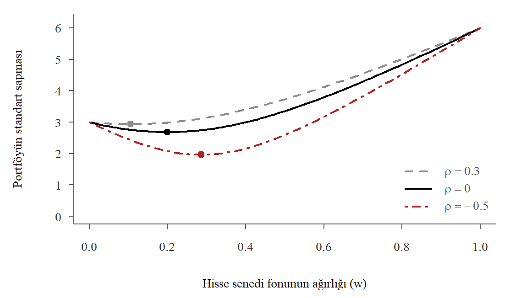
Şekil 11.10: Portföyün standart sapması ve hisse senedi fonunun ağırlığı (noktalar en düşük riskli portföyler)
Alıştırma 11.9 (Vize ve final notları) Bir derste vize notu \(X\) ve final notu \(Y\) için \((X,Y)\sim N_2(60,~55,~12^2,~15^2,~0.6)\) olduğunu varsayalım.
Rassal seçilen bir öğrencinin final notunun 70’in üzerinde olma olasılığı kaçtır?
Vizeden 80 alan bir öğrencinin final notunun koşullu dağılımını bulunuz. Bu öğrencinin finalden 70’in üzerinde alma olasılığı kaçtır?
Bir öğrencinin final notunun vize notundan yüksek olma olasılığı kaçtır?
Dönem sonu notu \(G=0.4X+0.6Y\) olarak hesaplanmaktadır. \(G\)’nin dağılımını ve \(\P(G<50)\) olasılığını bulunuz.
Çözüm
a) Marjinal dağılım \(Y\sim N(55,~15^2)\) olduğundan \(\P(Y>70)=1-\Phi\left((70-55)/15\right)=1-\Phi(1)=0.1587\) bulunur.
b) Koşullu dağılım formülünden (bkz. Denklem 11.34) \[
\E(Y\mid X=80)=55+0.6\cdot\frac{15}{12}\cdot(80-60)=70,\qquad \Var(Y\mid X=80)=15^2(1-0.6^2)=144
\] yani \(Y\mid X=80\sim N(70,~12^2)\) olur. Koşullu ortalama tam 70 olduğu için \(\P(Y>70\mid X=80)=0.5\) bulunur. Vizeden 80 almak finalde yüksek not alma olasılığını 0.16’dan 0.5’e çıkarır.
Bu öğrencinin vize notu ortalamanın \((80-60)/12\approx 1.67\) standart sapma üzerindedir. Final notunun beklenen değeri ise ortalamanın \((70-55)/15=1\) standart sapma üzerindedir. Vizede çok başarılı olan öğrencilerin finalde de ortalamanın üzerinde, ama vizedeki kadar uçta olmayan notlar alması beklenir. Bu ortalamaya dönüştür.
c)\(D=Y-X\) normal dağılır. \(\E(D)=55-60=-5\) ve \(\Var(D)=15^2+12^2-2(0.6)(12)(15)=153\) olur. Buradan \[
\P(Y>X)=\P(D>0)=1-\Phi\left(\frac{0-(-5)}{\sqrt{153}}\right)=1-\Phi(0.40)\approx 0.343
\] bulunur.
d)\(\E(G)=0.4(60)+0.6(55)=57\) ve \[
\Var(G)=0.4^2(12^2)+0.6^2(15^2)+2(0.4)(0.6)(0.6)(12)(15)=23.04+81+51.84=155.88
\] olur. \(G\sim N(57,~155.88)\) ve \(\P(G<50)=\Phi\left((50-57)/\sqrt{155.88}\right)=\Phi(-0.56)\approx 0.288\) bulunur. Sonuçları R ile doğrulayalım:
1-pnorm(70, 55, 15) # a
[1] 0.1586553
1-pnorm(70, 55+0.6*15/12*20, 15*sqrt(1-0.6^2)) # b
[1] 0.5
1-pnorm(0, -5, sqrt(153)) # c
[1] 0.3430233
pnorm(50, 57, sqrt(155.88)) # d
[1] 0.2875132
11.6 Problemler
Problem 11.1 Bir şehirde yapılan bir araştırmada hanelerin sigara alışkanlıkları ile ücretli spor salonu üyeliğine ilişkin bilgi toplanmıştır. \(X\) hanede ücretli spor yapan biri varsa 1, yoksa 0 değerini alan bir değişkendir. \(Y\) ise hanede sigara içen biri varsa 1, yoksa 0 değerini almaktadır. Aşağıdaki tablo birleşik olasılıkları göstermektedir:
Sigara (Y) / Spor (X)
1 (evet)
0 (hayır)
1 (evet)
0.04
0.50
0 (hayır)
0.02
0.44
\(X\) ve \(Y\)’nin marjinal olasılık fonksiyonlarını bulun.
Rassal seçilmiş bir hanede sigara içen biri varsa, hanede ücretli spor yapan birinin bulunma olasılığını bulun.
\(X\) ile \(Y\) arasındaki kovaryansı ve korelasyon katsayısını bulun.
\(X\) ve \(Y\) istatistik bakımından birbirinden bağımsız mıdır?
Problem 11.2 Bir araştırmacı hanede yaşayan kişi sayısı (X) ile tasarruf yapıp yapmama durumu (Y) arasındaki ilişki ile ilgilenmektedir. X, 1 ile 6 arasında değerler alırken, Y tasarruf yapanlar için 1, yapmayanlar için 0 değerini almaktadır. X ve Y’nin birleşik olasılık fonksiyonu aşağıdaki tabloda verilmiştir:
Tasarruf / Kişi
1
2
3
4
5
6
Toplam
1 (evet)
0.04
0.06
0.06
0.06
0.03
0.01
0.26
0 (hayır)
0.08
0.15
0.16
0.20
0.10
0.05
0.74
Toplam
0.12
0.21
0.22
0.26
0.13
0.06
1.00
X ve Y’nin marjinal olasılık fonksiyonlarını bulun.
Bu rassal değişkenlerin istatistik bakımından bağımsız olup olmadıklarını gösterin.
\(\Cov(X,Y)=?\)
Korelasyon katsayısını hesaplayınız.
Problem 11.4 Bir mağazaya gelen müşteri grubunun büyüklüğü \(X\) ve grubun satın aldığı ürün sayısı \(Y\) için birleşik olasılık fonksiyonu aşağıda verilmiştir.
\(x\setminus y\)
0
1
2
1
0.15
0.10
0.05
2
0.10
0.20
0.10
3
0.05
0.10
0.15
Marjinal olasılık fonksiyonlarını bulunuz.
Her \(x\) için \(\E(Y\mid X=x)\) değerini hesaplayınız. Grup büyüdükçe beklenen ürün sayısı nasıl değişiyor?
Yinelemeli beklenti yasasını kullanarak \(\E(Y)\) değerini bulunuz ve marjinal dağılımdan hesapladığınız değerle karşılaştırınız.
\(\Var(Y\mid X=1)\) ve \(\Var(Y\mid X=3)\) değerlerini hesaplayınız.
\(\Cov(X,Y)\) ve korelasyon katsayısını hesaplayınız. \(X\) ve \(Y\) bağımsız mıdır?
Problem 11.5\(X\) ve \(Y\)’nin birleşik yoğunluk fonksiyonu \[
f(x,y)=\left\{
\begin{array}{ll}
e^{-y}, & 0<x<y~\hbox{ise;} \\
0, & \hbox{değilse.}
\end{array}
\right.
\] olarak verilmiştir.
Tanım bölgesini \(xy\) düzleminde çiziniz ve bunun bir birleşik yoğunluk fonksiyonu olduğunu gösteriniz.
Marjinal yoğunluk fonksiyonlarını bulunuz. \(X\)’in marjinal dağılımı hangi dağılımdır?
\(Y=y\) verilmişken \(X\)’in koşullu yoğunluk fonksiyonunu bulunuz. Bu hangi dağılımdır?
\(X\) ve \(Y\) bağımsız mıdır? Tanım bölgesine bakarak yanıtınızı açıklayınız.
Problem 11.6 Bir hanede iki kişi çalışmaktadır. Birinci kişinin aylık geliri \(X_1\)’in ortalaması 30000 TL ve standart sapması 4000 TL, ikinci kişinin geliri \(X_2\)’nin ortalaması 22000 TL ve standart sapması 3000 TL’dir. İki gelir arasındaki korelasyon katsayısı 0.4’tür.
Hanenin toplam gelirinin beklenen değerini ve standart sapmasını bulunuz.
İki gelir arasındaki farkın, \(X_1-X_2\), beklenen değerini ve standart sapmasını bulunuz.
Hane, toplam gelirinin %10’unu tasarruf etmekte ve ayrıca her ay 1500 TL kira geliri elde etmektedir. Aylık tasarruf ile kira gelirinin toplamının beklenen değerini ve standart sapmasını bulunuz.
Gelirler birbirinden bağımsız olsaydı (a) şıkkındaki standart sapma nasıl değişirdi? Neden?
Problem 11.7\(X\) ve \(Y\), ortalamaları \(\mu_x\) ve \(\mu_y\), varyansları \(\sigma_x^2\) ve \(\sigma_y^2\) olan iki rassal değişken, \(a\) ve \(b\) ise sabit sayılar olsun. Metinde toplamların beklentisi ve varyansı için verilen kuralların ispatını örnek alarak aşağıdakileri gösteriniz.
Farkın varyansında kovaryans terimi neden eksi işaretiyle giriyor? \(X\) ile \(Y\) pozitif ilişkiliyken farkın değişkenliğinin toplamınkinden küçük olmasını sezgisel olarak açıklayınız.
Problem 11.8 İki hisse senedinin aylık getirileri (%) iki değişkenli normal dağılıma uymaktadır: \(\mu_A=1.0\), \(\mu_B=0.7\), \(\sigma_A=5\), \(\sigma_B=4\) ve \(\rho=0.2\).
Birikimin yarısı A’ya, yarısı B’ye yatırılırsa portföy getirisinin dağılımı nedir?
Bu portföyün bir ayda %5’ten fazla kaybettirme olasılığı kaçtır? Aynı olasılığı yalnızca A’ya yatırım yapılması durumu için hesaplayıp karşılaştırınız.
Portföy varyansını en küçük yapan ağırlıkları bulunuz.
Portföy alıştırmasındaki grafiği (bkz. Alıştırma 11.8) bu parametrelerle R’da çiziniz.
Problem 11.9 Bir anakütlede babaların boyu \(X\) ile yetişkin oğullarının boyu \(Y\) (cm) için \((X,Y)\sim N_2(175,~176,~7^2,~7^2,~0.5)\) olduğunu varsayalım.
Boyu 190 cm olan babaların oğullarının boyunun koşullu dağılımını bulunuz.
Boyu 190 cm olan bir babanın oğlunun da 190 cm’den uzun olma olasılığı kaçtır? Bu olasılığı marjinal olasılık \(\P(Y>190)\) ile karşılaştırınız.
Boyu 160 cm olan babaların oğulları için beklenen boyu bulunuz. (a) ve (c) şıklarındaki sonuçları ortalamaya dönüş kavramıyla yorumlayınız.
Rassal seçilen bir oğlun babasından uzun olma olasılığı kaçtır?
Problem 11.10 Kitaptaki hane anakütlesini (hane_anakutle.RData) kullanınız.
Hane büyüklüğünü 1, 2, 3, 4, 5 ve 6+ olarak gruplayarak hane büyüklüğü ile özel sağlık sigortası (ozel_sigorta, 1: var) arasındaki birleşik olasılık tablosunu oluşturunuz.
Her hane büyüklüğü için özel sigortası olma koşullu olasılığını hesaplayınız. Bu iki değişken bağımsız mıdır?
Sigara ve spor örneğindeki (bkz. Örnek 11.12) ilişkiyi her gelir çeyreği için ayrı ayrı hesaplayınız. Metinde söylenen “gelir çeyrekleri içinde fark büyük ölçüde kaybolur” ifadesini doğrulayınız.
Log gelir ve log harcama için hane geliri örneğindeki (bkz. Örnek 11.24) parametreleri kullanarak geliri 10000 TL olan hanelerin harcamasının 8000 TL’yi aşma olasılığını hesaplayınız. Geliri 9000 ile 11000 TL arasında olan hanelerdeki oranla karşılaştırınız.
Problem 11.11 Öğrenci anketi verisinde (ogrenci_anket.RData) kadın öğrencilerin boy ve kilo değişkenlerini kullanınız.
Boy ve kilonun ortalamalarını, standart sapmalarını ve korelasyon katsayısını hesaplayınız.
Bu değerleri iki değişkenli normal dağılımın parametreleri olarak kullanarak boyu 170 cm olan bir kadın öğrencinin kilosunun koşullu beklenen değerini ve koşullu standart sapmasını bulunuz.
Boy ve kilonun serpilme çizimini çizip koşullu beklenen değer doğrusunu ekleyiniz.
Bu hesapların neden kaba bir yaklaşım olduğunu örneklem büyüklüğü ve verinin anakütle değil örneklem olması açısından tartışınız.
Problem 11.12\(\mathbf{X}=(X_1,X_2,X_3)'\) çok değişkenli normal dağılıma uymaktadır. Ortalama vektörü ve kovaryans matrisi \[
\boldsymbol\mu=\begin{bmatrix} 2\\ 0\\ 1 \end{bmatrix},\qquad
\boldsymbol\Sigma=\begin{bmatrix}
4 & 1 & 0\\
1 & 9 & -2\\
0 & -2 & 1
\end{bmatrix}
\] olarak verilmiştir.
\(X_1\) ile \(X_2\) arasındaki ve \(X_2\) ile \(X_3\) arasındaki korelasyon katsayılarını bulunuz.
\(X_1\) ve \(X_3\) bağımsız mıdır? Neden?
\(W=X_1+X_2+X_3\) ve \(V=X_1-2X_3\) rassal değişkenlerinin dağılımlarını bulunuz. Hesabı önce toplamların varyans kurallarıyla, sonra R’da \(\mathbf{w}'\boldsymbol\Sigma\,\mathbf{w}\) matris çarpımıyla yapınız.